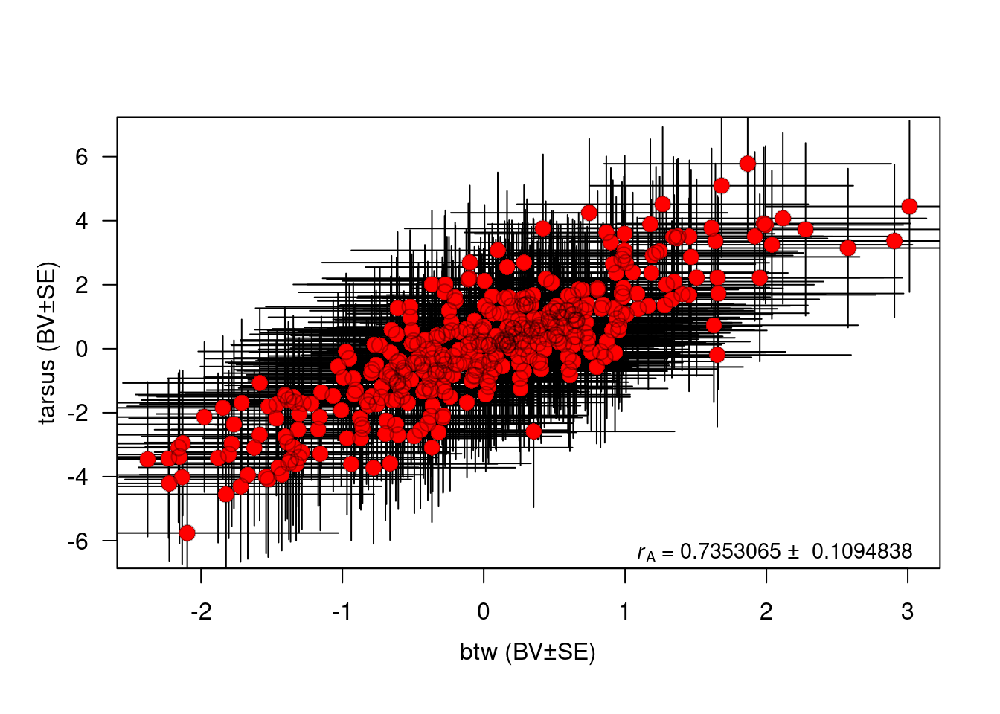
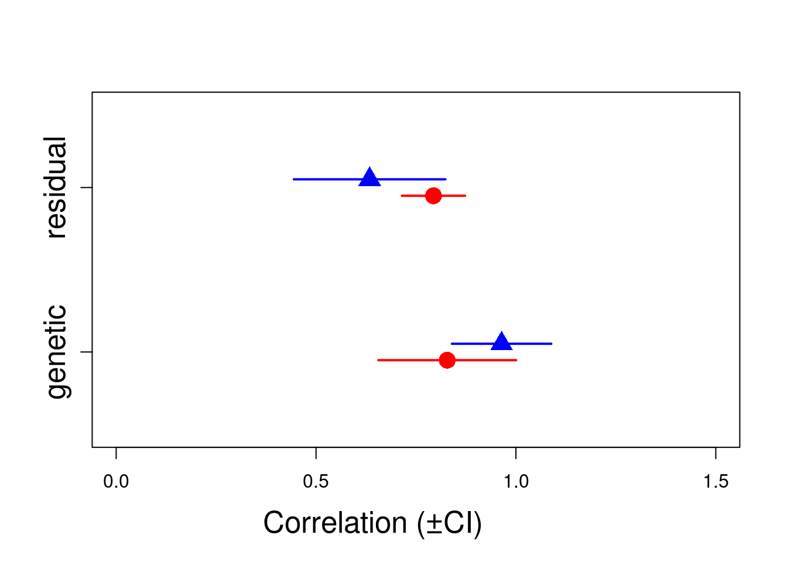
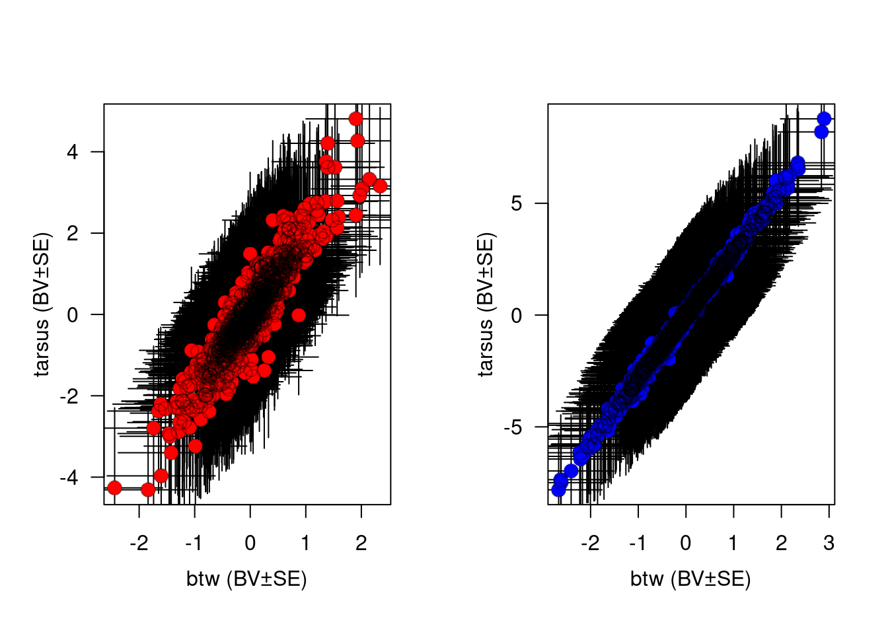
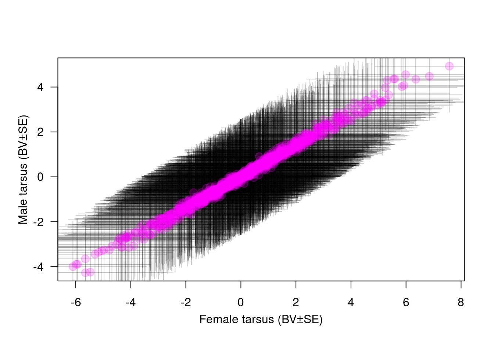

id father mother
1 1306 <NA> <NA>
2 1304 <NA> <NA>
3 1298 <NA> <NA>
4 1293 <NA> <NA>
5 1290 <NA> <NA>
6 1288 <NA> <NA>
7 1284 <NA> <NA>
8 1283 <NA> <NA>
9 1282 <NA> <NA>
10 1278 <NA> <NA>
11 1276 <NA> <NA>
12 1263 <NA> <NA>
13 1260 <NA> <NA>
14 1257 <NA> <NA>
15 1252 <NA> <NA>
16 1251 <NA> <NA>
17 1243 <NA> <NA>
18 1237 <NA> <NA>
19 1235 <NA> <NA>
20 1232 <NA> <NA>
21 1229 <NA> <NA>
22 1227 <NA> <NA>
23 1224 <NA> <NA>
24 1220 <NA> <NA>
25 1219 <NA> <NA>
26 1216 <NA> <NA>
27 1214 <NA> <NA>
28 1211 <NA> <NA>
29 1195 <NA> <NA>
30 1186 <NA> <NA>
31 1184 <NA> <NA>
32 1174 <NA> <NA>
33 1150 <NA> <NA>
34 1146 <NA> <NA>
35 1145 <NA> <NA>
36 1140 <NA> <NA>
37 1137 <NA> <NA>
38 1128 <NA> <NA>
39 1126 <NA> <NA>
40 1117 <NA> <NA>
41 1116 <NA> <NA>
42 1113 <NA> <NA>
43 1112 <NA> <NA>
44 1108 <NA> <NA>
45 1107 <NA> <NA>
46 1097 <NA> <NA>
47 1091 <NA> <NA>
48 1089 <NA> <NA>
49 1087 <NA> <NA>
50 1085 <NA> <NA>
51 1084 <NA> <NA>
52 1078 <NA> <NA>
53 1077 <NA> <NA>
54 1076 <NA> <NA>
55 1075 <NA> <NA>
56 1072 <NA> <NA>
57 1065 <NA> <NA>
58 1042 <NA> <NA>
59 1033 <NA> <NA>
60 1030 <NA> <NA>
61 1025 <NA> <NA>
62 1011 <NA> <NA>
63 1010 <NA> <NA>
64 1007 <NA> <NA>
65 1005 <NA> <NA>
66 997 <NA> <NA>
67 991 <NA> <NA>
68 990 <NA> <NA>
69 979 <NA> <NA>
70 977 <NA> <NA>
71 976 <NA> <NA>
72 968 <NA> <NA>
73 956 <NA> <NA>
74 955 <NA> <NA>
75 953 <NA> <NA>
76 952 <NA> <NA>
77 950 <NA> <NA>
78 942 <NA> <NA>
79 934 <NA> <NA>
80 926 <NA> <NA>
81 922 <NA> <NA>
82 909 <NA> <NA>
83 908 <NA> <NA>
84 895 <NA> <NA>
85 893 <NA> <NA>
86 884 <NA> <NA>
87 883 <NA> <NA>
88 882 <NA> <NA>
89 873 <NA> <NA>
90 869 <NA> <NA>
91 868 <NA> <NA>
92 866 <NA> <NA>
93 863 <NA> <NA>
94 862 <NA> <NA>
95 855 <NA> <NA>
96 854 <NA> <NA>
97 853 <NA> <NA>
98 842 <NA> <NA>
99 821 <NA> <NA>
100 812 <NA> <NA>
101 811 <NA> <NA>
102 796 <NA> <NA>
103 792 <NA> <NA>
104 791 <NA> <NA>
105 775 <NA> <NA>
106 772 <NA> <NA>
107 771 <NA> <NA>
108 768 <NA> <NA>
109 765 <NA> <NA>
110 761 <NA> <NA>
111 745 <NA> <NA>
112 742 <NA> <NA>
113 740 <NA> <NA>
114 736 <NA> <NA>
115 710 <NA> <NA>
116 703 <NA> <NA>
117 702 <NA> <NA>
118 701 <NA> <NA>
119 700 <NA> <NA>
120 695 <NA> <NA>
121 692 <NA> <NA>
122 687 <NA> <NA>
123 683 <NA> <NA>
124 677 <NA> <NA>
125 672 <NA> <NA>
126 670 <NA> <NA>
127 666 <NA> <NA>
128 659 <NA> <NA>
129 657 <NA> <NA>
130 652 <NA> <NA>
131 644 <NA> <NA>
132 642 <NA> <NA>
133 641 <NA> <NA>
134 634 <NA> <NA>
135 625 <NA> <NA>
136 623 <NA> <NA>
137 620 <NA> <NA>
138 618 <NA> <NA>
139 617 <NA> <NA>
140 601 <NA> <NA>
141 600 <NA> <NA>
142 587 <NA> <NA>
143 580 <NA> <NA>
144 577 <NA> <NA>
145 573 <NA> <NA>
146 571 <NA> <NA>
147 570 <NA> <NA>
148 566 <NA> <NA>
149 565 <NA> <NA>
150 555 <NA> <NA>
151 554 <NA> <NA>
152 542 <NA> <NA>
153 540 <NA> <NA>
154 539 <NA> <NA>
155 538 <NA> <NA>
156 529 <NA> <NA>
157 527 <NA> <NA>
158 512 <NA> <NA>
159 511 <NA> <NA>
160 504 <NA> <NA>
161 497 <NA> <NA>
162 489 <NA> <NA>
163 485 <NA> <NA>
164 475 <NA> <NA>
165 474 <NA> <NA>
166 473 <NA> <NA>
167 468 <NA> <NA>
168 467 <NA> <NA>
169 465 <NA> <NA>
170 458 <NA> <NA>
171 456 <NA> <NA>
172 451 <NA> <NA>
173 450 <NA> <NA>
174 440 <NA> <NA>
175 438 <NA> <NA>
176 421 <NA> <NA>
177 412 <NA> <NA>
178 393 <NA> <NA>
179 381 <NA> <NA>
180 374 <NA> <NA>
181 354 <NA> <NA>
182 350 <NA> <NA>
183 339 <NA> <NA>
184 331 <NA> <NA>
185 328 <NA> <NA>
186 327 <NA> <NA>
187 323 <NA> <NA>
188 320 <NA> <NA>
189 313 <NA> <NA>
190 299 <NA> <NA>
191 293 <NA> <NA>
192 290 <NA> <NA>
193 273 <NA> <NA>
194 272 <NA> <NA>
195 267 <NA> <NA>
196 266 <NA> <NA>
197 265 <NA> <NA>
198 256 <NA> <NA>
199 252 <NA> <NA>
200 245 <NA> <NA>
201 228 <NA> <NA>
202 215 <NA> <NA>
203 205 <NA> <NA>
204 199 <NA> <NA>
205 196 <NA> <NA>
206 191 <NA> <NA>
207 185 <NA> <NA>
208 174 <NA> <NA>
209 164 <NA> <NA>
210 160 <NA> <NA>
211 143 <NA> <NA>
212 140 <NA> <NA>
213 102 <NA> <NA>
214 92 <NA> <NA>
215 85 <NA> <NA>
216 58 <NA> <NA>
217 46 <NA> <NA>
218 45 <NA> <NA>
219 39 <NA> <NA>
220 31 <NA> <NA>
221 23 <NA> <NA>
222 19 <NA> <NA>
223 18 <NA> <NA>
224 13 <NA> <NA>
225 4 <NA> <NA>
226 1029 <NA> 1145
227 1299 <NA> 811
228 643 <NA> 642
229 1183 <NA> 1186
230 1238 <NA> 1237
231 891 <NA> 895
232 1181 <NA> 1010
233 568 <NA> 761
234 1080 <NA> 1085
235 697 <NA> 701
236 1295 <NA> 1299
237 1182 <NA> 1186
238 585 <NA> 587
239 951 <NA> 956
240 1249 <NA> 1252
241 1144 625 1145
242 564 <NA> 565
243 948 <NA> 950
244 1009 <NA> 1010
245 731 821 1306
246 665 821 666
247 810 <NA> 811
248 1236 <NA> 1237
249 1226 <NA> 1232
250 954 745 956
251 947 745 955
252 537 <NA> 538
253 949 821 950
254 1275 <NA> 1278
255 1305 <NA> 1306
256 576 <NA> 577
257 809 821 811
258 1180 <NA> 1186
259 584 <NA> 587
260 1088 512 1091
261 533 <NA> 542
262 614 <NA> 618
263 865 <NA> 540
264 889 <NA> 600
265 905 <NA> 908
266 944 601 956
267 967 <NA> 968
268 551 601 538
269 1026 <NA> 1029
270 859 <NA> 863
271 1109 <NA> 1112
272 1302 <NA> 1306
273 1073 <NA> 1077
274 661 <NA> 666
275 759 <NA> 761
276 636 <NA> 642
277 698 <NA> 701
278 1296 <NA> 1299
279 558 <NA> 570
280 1253 <NA> 1257
281 578 <NA> 585
282 1090 <NA> 1091
283 978 <NA> 979
284 1233 <NA> 1237
285 906 <NA> 908
286 945 <NA> 955
287 1250 <NA> 1252
288 963 <NA> 968
289 535 <NA> 538
290 793 <NA> 796
291 621 <NA> 623
292 1027 <NA> 1029
293 682 <NA> 683
294 655 <NA> 657
295 1303 1290 1306
296 662 <NA> 666
297 631 <NA> 665
298 760 <NA> 761
299 1081 1097 1085
300 1079 1097 1080
301 637 1097 642
302 1294 1097 1295
303 586 <NA> 587
304 579 <NA> 585
305 541 742 542
306 1225 <NA> 1232
307 946 <NA> 955
308 1127 <NA> 1128
309 525 <NA> 527
310 536 <NA> 538
311 794 <NA> 796
312 790 <NA> 792
313 622 1042 623
314 892 1042 895
315 1028 <NA> 1029
316 1194 <NA> 1195
317 656 <NA> 657
318 1110 926 1112
319 1277 <NA> 1278
320 1074 926 1077
321 632 <NA> 665
322 638 1290 642
323 699 926 701
324 574 <NA> 577
325 572 926 576
326 1141 <NA> 809
327 807 <NA> 810
328 932 926 1295
329 559 <NA> 570
330 1176 1097 1182
331 1177 <NA> 1183
332 988 <NA> 990
333 676 <NA> 1088
334 599 <NA> 600
335 1234 <NA> 1237
336 1228 <NA> 1236
337 503 670 1226
338 960 <NA> 952
339 526 <NA> 527
340 964 555 968
341 530 <NA> 537
342 795 <NA> 796
343 860 <NA> 863
344 562 <NA> 565
345 1136 <NA> 1195
346 1178 <NA> 1305
347 975 926 1073
348 1082 1290 1085
349 639 1290 642
350 885 1097 697
351 575 <NA> 577
352 1142 926 809
353 808 <NA> 810
354 933 <NA> 1295
355 1041 1290 1183
356 608 <NA> 652
357 1254 <NA> 1257
358 582 <NA> 584
359 989 <NA> 990
360 717 740 533
361 1047 <NA> 600
362 1045 <NA> 1233
363 1191 <NA> 1236
364 907 <NA> 908
365 911 <NA> 953
366 965 <NA> 968
367 531 <NA> 537
368 861 <NA> 863
369 993 <NA> 1109
370 1008 677 1010
371 1198 <NA> 1302
372 730 <NA> 731
373 663 926 666
374 678 <NA> 662
375 633 <NA> 665
376 1261 926 1080
377 961 <NA> 698
378 626 926 576
379 1297 <NA> 1299
380 1185 <NA> 1186
381 1189 1097 1182
382 628 1298 652
383 1255 <NA> 1257
384 711 <NA> 1253
385 828 <NA> 541
386 888 <NA> 889
387 1221 555 1232
388 505 <NA> 1226
389 966 <NA> 968
390 894 <NA> 895
391 1129 <NA> 891
392 681 1108 1027
393 1053 <NA> 1026
394 718 <NA> 682
395 563 <NA> 565
396 553 <NA> 554
397 598 <NA> 655
398 596 <NA> 949
399 1111 <NA> 1112
400 664 1108 666
401 679 <NA> 662
402 567 926 568
403 1083 926 1085
404 1262 926 1080
405 640 <NA> 642
406 1064 926 558
407 1179 926 1180
408 1256 926 1257
409 583 <NA> 584
410 744 <NA> 614
411 1048 1084 600
412 1279 926 978
413 1192 1298 1236
414 915 539 954
415 925 539 945
416 510 <NA> 1249
417 532 <NA> 537
418 557 539 790
419 943 <NA> 622
420 1199 <NA> 1028
421 560 <NA> 565
422 899 <NA> 562
423 1006 <NA> 1010
424 1274 641 1277
425 597 641 1275
426 1196 1078 1302
427 660 1005 666
428 654 571 661
429 629 <NA> 665
430 825 <NA> 631
431 1259 926 1080
432 1096 <NA> 699
433 1248 909 932
434 1040 <NA> 1183
435 709 <NA> 1253
436 867 1005 585
437 615 1146 618
438 521 1084 540
439 864 <NA> 865
440 887 926 889
441 1231 926 1237
442 1190 <NA> 1236
443 502 <NA> 1226
444 914 <NA> 954
445 910 <NA> 953
446 770 539 947
447 524 <NA> 527
448 509 1084 1249
449 480 <NA> 963
450 534 <NA> 538
451 789 1146 792
452 1052 <NA> 1026
453 561 <NA> 565
454 552 <NA> 554
455 1019 1224 1110
456 992 <NA> 1109
457 1070 <NA> 1303
458 1197 641 1302
459 973 909 1073
460 739 <NA> 678
461 630 <NA> 665
462 635 687 642
463 528 <NA> 572
464 1143 <NA> 809
465 627 <NA> 628
466 507 <NA> 1255
467 581 1298 584
468 675 1229 1088
469 616 <NA> 618
470 743 <NA> 614
471 1046 942 600
472 782 <NA> 1047
473 1247 1229 1225
474 881 641 946
475 688 812 526
476 962 <NA> 968
477 481 <NA> 963
478 872 <NA> 536
479 556 1229 790
480 890 <NA> 895
481 1024 <NA> 892
482 1130 <NA> 891
483 671 <NA> 672
484 122 <NA> 562
485 94 <NA> 554
486 118 <NA> 855
487 99 1150 1275
488 150 1065 1302
489 109 893 731
490 139 <NA> 1077
491 108 <NA> 661
492 104 <NA> 665
493 154 700 1080
494 111 1184 1261
495 106 700 636
496 98 1030 626
497 146 1146 1294
498 101 <NA> 608
499 153 1084 1257
500 91 641 1255
501 156 <NA> 711
502 96 909 584
503 119 1184 585
504 136 <NA> 600
505 121 812 889
506 135 812 1233
507 152 1184 1225
508 112 <NA> 906
509 125 <NA> 954
510 129 <NA> 968
511 116 1184 964
512 89 1150 963
513 93 1229 538
514 128 539 622
515 147 <NA> 891
516 148 <NA> 883
517 193 <NA> 1029
518 203 <NA> 1028
519 195 <NA> 1199
520 198 <NA> 1112
521 207 <NA> 1274
522 166 <NA> 1275
523 177 791 1198
524 204 <NA> 975
525 172 1282 660
526 206 1227 1080
527 173 1011 1261
528 167 687 639
529 190 <NA> 698
530 162 <NA> 572
531 187 <NA> 1296
532 197 <NA> 558
533 194 687 1183
534 184 1011 628
535 182 <NA> 1254
536 171 991 1253
537 209 687 711
538 165 1227 584
539 183 1227 585
540 181 <NA> 541
541 192 <NA> 744
542 180 573 1048
543 179 909 1047
544 186 909 889
545 211 <NA> 978
546 202 812 1236
547 175 991 906
548 188 1224 954
549 189 812 945
550 178 812 925
551 176 812 947
552 169 1075 526
553 210 1251 1250
554 208 1184 1276
555 161 812 1249
556 212 812 510
557 163 <NA> 537
558 200 812 891
559 170 <NA> 869
560 201 <NA> 1126
561 168 <NA> 659
562 234 <NA> 562
563 233 <NA> 866
564 243 <NA> 489
565 232 <NA> 855
566 227 <NA> 597
567 240 <NA> 1303
568 248 884 1302
569 237 1007 1073
570 235 1117 663
571 238 <NA> 679
572 223 <NA> 661
573 239 <NA> 629
574 224 <NA> 634
575 249 909 637
576 220 909 626
577 221 909 1142
578 251 909 932
579 225 1075 1248
580 244 <NA> 1189
581 230 <NA> 1254
582 219 1227 584
583 217 <NA> 581
584 229 <NA> 541
585 222 1227 618
586 231 1227 615
587 226 <NA> 887
588 218 909 1279
589 247 768 1236
590 246 1075 1190
591 250 1304 1225
592 254 <NA> 1250
593 253 1184 1276
594 216 <NA> 1249
595 255 768 510
596 213 1007 963
597 236 1184 622
598 241 <NA> 620
599 242 <NA> 891
600 214 <NA> 1089
601 288 <NA> 1029
602 298 566 563
603 257 <NA> 552
604 296 1075 1293
605 301 <NA> 1284
606 283 <NA> 1109
607 286 <NA> 1010
608 278 <NA> 730
609 282 <NA> 1073
610 297 <NA> 975
611 281 1220 664
612 261 873 665
613 284 <NA> 629
614 260 909 639
615 264 <NA> 638
616 285 868 1096
617 280 504 698
618 258 <NA> 626
619 259 <NA> 1142
620 279 1007 1296
621 268 <NA> 1256
622 271 1227 541
623 287 1211 744
624 274 <NA> 865
625 270 <NA> 1047
626 276 1235 889
627 300 <NA> 978
628 295 <NA> 1236
629 294 1075 1190
630 277 1075 1221
631 269 922 925
632 263 <NA> 526
633 275 <NA> 967
634 291 <NA> 891
635 292 <NA> 1126
636 262 <NA> 672
637 289 <NA> 1033
638 332 <NA> 1293
639 302 <NA> 497
640 319 <NA> 855
641 325 <NA> 1110
642 329 <NA> 1019
643 335 <NA> 1277
644 334 <NA> 1274
645 310 1075 597
646 330 1220 1302
647 311 <NA> 660
648 303 <NA> 654
649 307 <NA> 104
650 306 <NA> 634
651 316 <NA> 631
652 318 1011 1262
653 312 1116 1261
654 326 617 961
655 304 909 584
656 309 <NA> 96
657 324 1304 988
658 317 <NA> 615
659 315 1087 1047
660 308 1227 887
661 322 922 1221
662 321 <NA> 907
663 333 580 905
664 314 922 925
665 305 504 526
666 336 922 1250
667 378 <NA> 1140
668 376 <NA> 489
669 360 <NA> 1283
670 359 <NA> 854
671 344 <NA> 1275
672 380 <NA> 1302
673 379 1263 150
674 338 <NA> 1197
675 340 <NA> 177
676 383 <NA> 975
677 356 1007 204
678 337 <NA> 654
679 348 <NA> 104
680 361 1007 567
681 358 1076 1262
682 346 <NA> 639
683 368 504 1096
684 343 862 626
685 370 1087 98
686 363 <NA> 1296
687 366 92 1295
688 353 <NA> 146
689 377 1076 1189
690 345 976 184
691 382 1087 153
692 384 1072 711
693 341 1076 581
694 357 <NA> 615
695 372 <NA> 744
696 351 1087 192
697 373 <NA> 186
698 349 <NA> 887
699 385 <NA> 978
700 352 <NA> 135
701 362 <NA> 907
702 365 768 189
703 355 934 925
704 347 893 526
705 367 1075 161
706 371 1075 509
707 386 1304 510
708 342 <NA> 537
709 364 768 557
710 375 <NA> 620
711 369 <NA> 148
712 419 <NA> 563
713 397 <NA> 298
714 417 <NA> 94
715 400 <NA> 232
716 394 <NA> 597
717 414 1260 248
718 403 504 730
719 395 <NA> 660
720 408 <NA> 629
721 391 <NA> 634
722 401 1007 567
723 399 692 1262
724 418 <NA> 249
725 390 <NA> 285
726 411 566 961
727 413 692 220
728 424 1087 221
729 406 1087 1295
730 420 <NA> 932
731 404 <NA> 244
732 387 228 1255
733 388 <NA> 581
734 407 <NA> 988
735 398 1304 541
736 392 1304 229
737 409 <NA> 744
738 410 1211 1233
739 396 934 135
740 416 <NA> 202
741 415 143 1190
742 402 1260 1221
743 422 934 1250
744 405 692 216
745 423 1304 510
746 389 1304 236
747 436 <NA> 193
748 464 <NA> 1026
749 460 772 198
750 471 <NA> 1019
751 437 <NA> 329
752 441 <NA> 597
753 472 566 1302
754 469 <NA> 150
755 428 <NA> 1197
756 445 1211 1198
757 430 <NA> 177
758 439 290 109
759 443 1087 139
760 433 692 281
761 435 566 235
762 459 <NA> 629
763 425 <NA> 284
764 444 143 1261
765 476 <NA> 260
766 448 <NA> 279
767 457 <NA> 268
768 429 873 1255
769 478 1087 711
770 434 <NA> 584
771 431 710 581
772 426 1211 119
773 449 1260 541
774 447 853 1047
775 462 <NA> 276
776 442 1260 135
777 463 1075 247
778 470 199 202
779 452 <NA> 1221
780 427 853 505
781 453 267 189
782 446 1075 925
783 479 504 269
784 455 1075 178
785 477 1075 1276
786 454 1260 216
787 461 1075 509
788 466 191 116
789 432 245 537
790 34 <NA> 1026
791 6 <NA> 325
792 36 771 1019
793 14 256 139
794 33 252 973
795 21 <NA> 204
796 12 1087 660
797 17 692 739
798 15 <NA> 1261
799 30 775 1096
800 8 1076 285
801 16 1137 146
802 7 <NA> 184
803 28 1263 268
804 3 1087 1255
805 9 1260 96
806 37 1072 217
807 1 873 119
808 10 873 324
809 22 1260 541
810 5 1076 287
811 11 <NA> 192
812 20 1107 1048
813 2 1260 270
814 24 1075 295
815 35 1075 1190
816 25 <NA> 907
817 26 293 189
818 27 934 178
819 29 1075 161
820 32 1211 509
821 38 <NA> 510
822 67 <NA> 1053
823 79 <NA> 1019
824 51 <NA> 329
825 81 <NA> 344
826 43 160 330
827 77 164 150
828 41 1219 379
829 54 381 109
830 70 290 282
831 87 350 237
832 69 160 973
833 50 <NA> 383
834 48 <NA> 235
835 44 228 654
836 62 882 567
837 60 <NA> 1262
838 59 1076 318
839 82 529 249
840 75 266 368
841 68 <NA> 190
842 80 <NA> 251
843 52 185 1248
844 49 185 225
845 64 185 382
846 56 <NA> 230
847 88 350 711
848 55 1107 209
849 53 842 96
850 83 <NA> 217
851 42 1107 119
852 61 <NA> 357
853 78 252 372
854 47 205 287
855 71 <NA> 276
856 57 215 135
857 65 102 352
858 72 1075 247
859 76 <NA> 1190
860 40 92 355
861 74 164 314
862 73 92 254
863 63 <NA> 536
864 66 92 557
865 86 1263 241
866 84 <NA> 369
867 696 143 436
868 858 <NA> 232
869 1020 1072 1110
870 588 <NA> 325
871 1123 <NA> 469
872 974 <NA> 1073
873 919 354 297
874 813 695 204
875 844 421 356
876 996 <NA> 629
877 845 215 1262
878 741 473 358
879 836 393 318
880 1004 215 346
881 1267 215 260
882 1086 882 961
883 1200 140 370
884 1286 350 221
885 712 1260 96
886 1124 1072 341
887 490 1260 119
888 827 1260 541
889 843 <NA> 615
890 735 215 192
891 787 140 274
892 1035 185 276
893 1061 1260 186
894 870 102 295
895 1050 228 367
896 1022 252 509
897 1021 <NA> 1110
898 492 196 330
899 763 <NA> 443
900 1264 299 237
901 1023 <NA> 973
902 814 374 204
903 748 174 660
904 802 <NA> 12
905 593 102 235
906 752 <NA> 476
907 1187 695 411
908 1169 695 326
909 1201 412 370
910 823 702 363
911 912 <NA> 244
912 876 <NA> 382
913 980 <NA> 457
914 1161 465 478
915 610 299 384
916 733 328 209
917 513 <NA> 581
918 645 <NA> 449
919 719 1107 229
920 830 215 317
921 1175 <NA> 372
922 518 702 287
923 788 273 274
924 1062 1260 186
925 779 695 218
926 901 <NA> 352
927 916 143 189
928 781 102 925
929 548 143 446
930 482 102 355
931 1114 191 466
932 1246 <NA> 241
933 1193 <NA> 460
934 1043 <NA> 36
935 493 456 330
936 1258 290 43
937 486 290 379
938 1051 438 33
939 920 320 297
940 815 <NA> 204
941 857 205 21
942 749 695 660
943 569 468 281
944 673 299 17
945 837 205 318
946 753 <NA> 476
947 998 695 1096
948 1098 <NA> 220
949 1287 205 221
950 1204 695 251
951 706 <NA> 1248
952 607 <NA> 101
953 877 <NA> 382
954 1212 <NA> 28
955 798 695 3
956 1157 228 429
957 1162 215 478
958 611 <NA> 384
959 734 695 209
960 514 228 581
961 646 331 449
962 726 191 398
963 720 191 229
964 849 191 357
965 831 191 317
966 519 <NA> 287
967 1155 191 447
968 506 102 270
969 756 265 135
970 902 <NA> 352
971 1167 <NA> 1190
972 549 252 446
973 483 313 355
974 1133 293 314
975 1057 474 455
976 995 293 161
977 1131 265 29
978 957 313 129
979 624 <NA> 163
980 494 <NA> 330
981 1170 465 150
982 487 450 379
983 1265 <NA> 237
984 816 <NA> 204
985 803 467 12
986 674 <NA> 17
987 1101 <NA> 459
988 838 <NA> 318
989 1015 <NA> 75
990 1002 272 8
991 1188 320 411
992 1099 <NA> 220
993 824 46 363
994 1209 <NA> 80
995 680 473 225
996 878 299 382
997 1153 <NA> 56
998 612 299 384
999 713 102 96
1000 515 299 581
1001 667 205 42
1002 721 205 229
1003 850 <NA> 357
1004 1119 215 78
1005 606 102 2
1006 1036 <NA> 276
1007 1031 199 462
1008 1063 <NA> 186
1009 757 <NA> 135
1010 1271 <NA> 65
1011 871 <NA> 295
1012 777 393 35
1013 786 <NA> 321
1014 917 327 189
1015 550 265 446
1016 1115 <NA> 254
1017 958 199 129
1018 689 <NA> 236
1019 603 <NA> 588
1020 1044 <NA> 36
1021 495 <NA> 330
1022 499 <NA> 338
1023 691 13 763
1024 927 <NA> 1264
1025 984 475 844
1026 750 272 660
1027 804 272 12
1028 594 473 235
1029 1066 339 435
1030 1245 644 62
1031 937 46 361
1032 1056 272 1004
1033 1268 272 260
1034 754 <NA> 476
1035 999 272 1096
1036 1240 473 30
1037 1202 <NA> 370
1038 1205 473 251
1039 879 <NA> 382
1040 981 <NA> 457
1041 1158 475 429
1042 737 <NA> 230
1043 1163 <NA> 478
1044 714 299 96
1045 516 <NA> 581
1046 590 <NA> 513
1047 668 205 42
1048 647 <NA> 449
1049 727 474 398
1050 722 <NA> 229
1051 1120 458 78
1052 520 215 287
1053 1032 323 462
1054 1272 <NA> 65
1055 1173 <NA> 416
1056 1168 474 1190
1057 923 <NA> 453
1058 1166 <NA> 27
1059 1058 323 455
1060 959 <NA> 129
1061 1222 <NA> 369
1062 604 <NA> 588
1063 1054 339 428
1064 500 997 338
1065 764 <NA> 443
1066 1266 <NA> 237
1067 685 474 1023
1068 707 997 50
1069 1148 <NA> 815
1070 1013 <NA> 593
1071 1067 <NA> 435
1072 491 <NA> 673
1073 1269 272 260
1074 1241 473 30
1075 1003 1243 8
1076 1103 1243 1187
1077 1039 <NA> 823
1078 1071 421 1204
1079 738 458 912
1080 649 <NA> 345
1081 523 39 607
1082 1213 320 28
1083 799 23 3
1084 897 <NA> 798
1085 650 1113 1157
1086 1154 <NA> 56
1087 715 327 96
1088 773 327 9
1089 766 <NA> 1
1090 704 327 426
1091 728 327 398
1092 851 474 357
1093 832 <NA> 317
1094 936 19 518
1095 846 <NA> 11
1096 1156 199 447
1097 1037 474 276
1098 758 <NA> 135
1099 903 <NA> 352
1100 784 <NA> 1167
1101 918 440 189
1102 970 458 916
1103 1049 765 548
1104 1059 458 455
1105 690 <NA> 236
1106 605 <NA> 588
1107 496 <NA> 330
1108 994 <NA> 494
1109 488 <NA> 379
1110 762 45 487
1111 1307 1025 41
1112 1055 <NA> 428
1113 724 <NA> 14
1114 1034 <NA> 282
1115 708 <NA> 50
1116 1207 <NA> 816
1117 928 <NA> 748
1118 805 <NA> 12
1119 595 <NA> 235
1120 1068 <NA> 435
1121 938 <NA> 361
1122 839 458 318
1123 939 <NA> 753
1124 1217 <NA> 249
1125 1242 <NA> 30
1126 1104 <NA> 1187
1127 1151 <NA> 1098
1128 1203 <NA> 370
1129 1210 511 80
1130 913 <NA> 244
1131 982 <NA> 457
1132 800 <NA> 3
1133 898 977 798
1134 1164 485 478
1135 1281 1025 611
1136 591 <NA> 513
1137 669 <NA> 42
1138 767 <NA> 1
1139 705 <NA> 426
1140 729 <NA> 398
1141 986 475 726
1142 723 <NA> 229
1143 852 <NA> 357
1144 819 <NA> 519
1145 847 <NA> 11
1146 508 <NA> 1062
1147 780 <NA> 218
1148 1230 45 756
1149 904 458 352
1150 785 <NA> 1167
1151 1106 45 322
1152 931 440 917
1153 971 18 916
1154 924 85 453
1155 969 <NA> 483
1156 1060 393 455
1157 546 19 995
1158 1223 <NA> 369
1159 1171 <NA> 150
1160 941 412 1170
1161 501 <NA> 338
1162 686 45 1023
1163 921 <NA> 297
1164 1149 412 815
1165 929 58 748
1166 806 <NA> 12
1167 1215 <NA> 395
1168 1069 1216 435
1169 840 511 318
1170 755 <NA> 476
1171 1218 <NA> 249
1172 694 <NA> 999
1173 1016 <NA> 75
1174 1105 <NA> 1187
1175 834 <NA> 1169
1176 1100 <NA> 220
1177 1147 23 878
1178 1095 4 1158
1179 651 <NA> 1157
1180 1001 <NA> 1163
1181 613 511 384
1182 716 <NA> 96
1183 774 <NA> 9
1184 592 <NA> 513
1185 987 703 726
1186 972 451 722
1187 1292 <NA> 831
1188 1121 31 78
1189 602 <NA> 1119
1190 848 511 11
1191 1038 <NA> 276
1192 1134 1214 314
1193 547 <NA> 995
1194 747 <NA> 624
1195 1172 <NA> 1246
1196 817 <NA> 77
1197 684 <NA> 1023
1198 1012 85 593
1199 1289 421 937
1200 835 <NA> 318
1201 751 <NA> 476
1202 1239 <NA> 30
1203 822 <NA> 1002
1204 1102 <NA> 1187
1205 833 <NA> 1169
1206 886 <NA> 1205
1207 1208 <NA> 80
1208 1308 <NA> 52
1209 648 <NA> 345
1210 797 458 3
1211 1092 <NA> 799
1212 896 <NA> 798
1213 1093 <NA> 1158
1214 609 <NA> 384
1215 1280 <NA> 611
1216 880 <NA> 515
1217 589 <NA> 513
1218 725 <NA> 398
1219 829 <NA> 317
1220 1300 <NA> 1120
1221 818 <NA> 519
1222 935 <NA> 518
1223 1138 <NA> 788
1224 1017 <NA> 1036
1225 900 <NA> 352
1226 732 <NA> 901
1227 1135 <NA> 786
1228 930 <NA> 917
1229 1165 <NA> 27
1230 544 <NA> 995
1231 778 <NA> 32
1232 517 <NA> 959
1233 940 <NA> 1170
1234 484 <NA> 379
1235 498 <NA> 338
1236 1206 <NA> 816
1237 801 475 12
1238 1125 <NA> 804
1239 658 <NA> 1013
1240 1244 <NA> 62
1241 1122 1216 838
1242 543 <NA> 754
1243 693 <NA> 999
1244 1014 <NA> 75
1245 1309 <NA> 52
1246 653 <NA> 649
1247 522 <NA> 607
1248 875 <NA> 382
1249 1094 <NA> 1158
1250 841 <NA> 737
1251 1152 <NA> 56
1252 1159 <NA> 1153
1253 1160 58 478
1254 1000 <NA> 1163
1255 856 <NA> 612
1256 769 <NA> 773
1257 985 <NA> 726
1258 1273 1216 721
1259 820 475 851
1260 1291 <NA> 831
1261 1118 <NA> 78
1262 1301 <NA> 1120
1263 1139 <NA> 788
1264 983 1216 1156
1265 826 <NA> 1037
1266 1018 <NA> 1036
1267 1270 393 65
1268 619 <NA> 1271
1269 783 <NA> 1167
1270 776 <NA> 35
1271 874 <NA> 549
1272 1132 1174 314
1273 545 <NA> 995
1274 746 <NA> 624
1275 1285 <NA> 689
1276 134 23 1034
1277 103 23 69
1278 126 1288 1207
1279 115 <NA> 12
1280 124 <NA> 595
1281 159 <NA> 937
1282 105 <NA> 1268
1283 137 <NA> 1242
1284 132 <NA> 75
1285 151 <NA> 80
1286 107 <NA> 1210
1287 141 <NA> 1209
1288 120 <NA> 382
1289 114 <NA> 3
1290 142 <NA> 799
1291 123 511 897
1292 149 <NA> 429
1293 138 <NA> 1164
1294 157 <NA> 611
1295 97 <NA> 513
1296 113 <NA> 705
1297 130 <NA> 726
1298 155 <NA> 721
1299 100 <NA> 1119
1300 145 <NA> 819
1301 133 <NA> 1036
1302 90 736 508
1303 110 <NA> 901
1304 127 <NA> 917
1305 117 <NA> 550
1306 95 <NA> 29
1307 158 <NA> 689
1308 131 <NA> 1223
1309 144 <NA> 12227 Asreml-R
7.0.1 Running the model
First we need to load the asreml library:
library(asreml)Loading required package: MatrixOnline License checked out Mon Mar 25 16:48:01 2024Loading ASReml-R version 4.2For running multivariate analyses in ASReml-R, the code is slightly more complex than for the univariate case. This is because ASReml-R allows us to make different assumptions about the way in which traits might be related. We need to explicitly specify a covariance structure with difference covariance functions us(), idh() or corgh() which for example would estimate an unconstrained (co)variance matrix, an identity matrix and a variance and correlation matrix repestively. We can also specify some starting values for the variance matrices. These can be very approximate guestimates or not at all, but having reasonable starting values can help convergence. It is also possible to let the model running without specifying starting values. Finally, we have increased the default maximum number of iterations (maxiter) which can help to achieve convergence for more complicated models. Another way to increase the number of iteration will be to use the update function. Notes that if the LogLik is not stabilized after several iterations, it is good indication of the model require more iteration.
ainv <- ainverse(gryphonped)
modela <- asreml(
fixed = cbind(bwt, tarsus) ~ trait,
random = ~ us(trait, init = c(1, 0.1, 1)):vm(animal, ainv),
residual = ~ id(units):us(trait, init = c(1, 0.1, 1)),
data = gryphon,
na.action = na.method(x = "include", y = "include"),
maxit = 20
)ASReml Version 4.2 25/03/2024 16:50:01
LogLik Sigma2 DF wall
1 -7108.741 1.0 1535 16:50:01
2 -5837.803 1.0 1535 16:50:01
3 -4437.495 1.0 1535 16:50:01
4 -3459.378 1.0 1535 16:50:01
5 -2914.034 1.0 1535 16:50:01
6 -2729.131 1.0 1535 16:50:01
7 -2684.659 1.0 1535 16:50:01
8 -2679.838 1.0 1535 16:50:01
9 -2679.742 1.0 1535 16:50:01
10 -2679.741 1.0 1535 16:50:01modela <- update(modela)ASReml Version 4.2 25/03/2024 16:50:01
LogLik Sigma2 DF wall
1 -2679.741 1.0 1535 16:50:01
2 -2679.741 1.0 1535 16:50:01modela has fitted a bivariate model of bwt and tarsus, with the mean for each of the traits as a fixed effect (trait). The additive genetic variance-covariance matrix (\(\textbf{G}\)) is unstructured (us; i.e. all elements are free to vary) and the starting values for \(V_A\) for bwt, \(COV_A\) between bwt and tarsus, and \(V_A\) for tarsus are set to 1, 0.1 and 1, respectively. Similarly, the residual matrix is unstructured and uses the same starting values.
Note that the argument na.action = na.method(x = "include", y = "include") can be added to the model. In a bivariate model, it will help calculate the covariance between two traits with different missing information NA and so help imbalance phenotypage and save sample size. However, it is important to scale ( mean =0, var =1) the two traits to correctly adjust the model(see Asreml-R manual for more information).
Let’s have a look at the variance components, and notice that there are now seven (co)variance components reported in the table:
summary(modela)$varcomp component std.error z.ratio bound
trait:vm(animal, ainv)!trait_bwt:bwt 3.368397 0.6348307 5.305977 P
trait:vm(animal, ainv)!trait_tarsus:bwt 2.459809 1.0732644 2.291895 P
trait:vm(animal, ainv)!trait_tarsus:tarsus 12.345792 3.0744285 4.015638 P
units:trait!R 1.000000 NA NA F
units:trait!trait_bwt:bwt 3.849916 0.5200101 7.403541 P
units:trait!trait_tarsus:bwt 3.313282 0.9129234 3.629310 P
units:trait!trait_tarsus:tarsus 17.646432 2.6670380 6.616491 P
%ch
trait:vm(animal, ainv)!trait_bwt:bwt 0
trait:vm(animal, ainv)!trait_tarsus:bwt 0
trait:vm(animal, ainv)!trait_tarsus:tarsus 0
units:trait!R 0
units:trait!trait_bwt:bwt 0
units:trait!trait_tarsus:bwt 0
units:trait!trait_tarsus:tarsus 0The first three terms are related to the genetic matrix and, in order are \(V_{A,bwt}\), \(COV_A\), \(V_{A, tarsus}\). Below is again a line where the units:traitr!R component equals to 1, which again can be ignored. The final three terms relate to the residual matrix and correspond to \(V_{R,bwt}\), \(COV_R\), \(V_{R,tarsus}\). Based on our quick and dirty check (is z.ratio > 1.96?) all components look to be statistically significant.
We can calculate the genetic correlation as \(COV_A / \sqrt{V_{A,bwt} \cdot V_{A,tarsus}}\). Thus this model gives an estimate of \(r_A\) = 0.38. It is also possible to estimate the residual correlation \(r_{res}\) = 0.4.
Both correlations are distinct in nature. The genetic correlation reflects how much the traits are linked by genetic via polygenic effect or linkage desequilibrium, whereas the residual correlation reflects the environmental correlation or errors measurement correlation.
Although we can calculate this by hand, we can also use vpredict(), which also provides an (approximate) standard error:
Estimate SE
r_A 0.3814436 0.1299759 Estimate SE
r_res 0.4019799 0.08607104Of course we can also calculate the heritability of bwt and tarsus from this model:
7.0.2 Adding fixed and random effects
Fixed and random effects can be added just as for the univariate case. Given that our full model of bwt from tutorial 1 had sex as a fixed effect as well as birth year and mother as random effects, we could specify a bivariate formulation with the same complexity:
modelb <- asreml(
fixed = cbind(bwt, tarsus) ~ trait + at(trait):sex,
random = ~ us(trait, init = c(1, 0.1, 1)):vm(animal, ainv) +
us(trait, init = c(1, 0.1, 1)):byear +
us(trait, init = c(1, 0.1, 1)):mother,
residual = ~ id(units):us(trait, init = c(1, 0.1, 1)),
data = gryphon,
na.action = na.method(x = "include", y = "include"),
maxit = 20
)ASReml Version 4.2 25/03/2024 16:50:02
LogLik Sigma2 DF wall
1 -4672.301 1.0 1533 16:50:02
2 -4005.616 1.0 1533 16:50:02
3 -3271.484 1.0 1533 16:50:02 ( 1 restrained)
4 -2761.414 1.0 1533 16:50:02 ( 1 restrained)
5 -2481.355 1.0 1533 16:50:02
6 -2395.858 1.0 1533 16:50:02
7 -2381.050 1.0 1533 16:50:02
8 -2380.251 1.0 1533 16:50:02
9 -2380.246 1.0 1533 16:50:02modelb <- update(modelb)ASReml Version 4.2 25/03/2024 16:50:02
LogLik Sigma2 DF wall
1 -2380.246 1.0 1533 16:50:02
2 -2380.246 1.0 1533 16:50:02Note that we have specified a covariance structure for each random effect and an estimate of the effect of sex on both birth weight and tarsus length.
There will now be thirteen (co)variance components reported after running the code:
summary(modelb)$varcomp component std.error z.ratio
trait:byear!trait_bwt:bwt 0.9746385 0.2825727 3.4491602
trait:byear!trait_tarsus:bwt 0.1624076 0.4185079 0.3880635
trait:byear!trait_tarsus:tarsus 3.7383721 1.2065992 3.0982716
trait:mother!trait_bwt:bwt 1.1445184 0.2302182 4.9714512
trait:mother!trait_tarsus:bwt -1.5567306 0.4051848 -3.8420260
trait:mother!trait_tarsus:tarsus 4.8206132 1.3201300 3.6516202
trait:vm(animal, ainv)!trait_bwt:bwt 1.9893546 0.4410246 4.5107569
trait:vm(animal, ainv)!trait_tarsus:bwt 3.3170404 0.9032323 3.6724110
trait:vm(animal, ainv)!trait_tarsus:tarsus 10.2294887 2.8077066 3.6433610
units:trait!R 1.0000000 NA NA
units:trait!trait_bwt:bwt 1.8443110 0.3443178 5.3564203
units:trait!trait_tarsus:bwt 4.0142841 0.7412540 5.4155308
units:trait!trait_tarsus:tarsus 12.4845955 2.2893363 5.4533690
bound %ch
trait:byear!trait_bwt:bwt P 0
trait:byear!trait_tarsus:bwt P 0
trait:byear!trait_tarsus:tarsus P 0
trait:mother!trait_bwt:bwt P 0
trait:mother!trait_tarsus:bwt P 0
trait:mother!trait_tarsus:tarsus P 0
trait:vm(animal, ainv)!trait_bwt:bwt P 0
trait:vm(animal, ainv)!trait_tarsus:bwt P 0
trait:vm(animal, ainv)!trait_tarsus:tarsus P 0
units:trait!R F 0
units:trait!trait_bwt:bwt P 0
units:trait!trait_tarsus:bwt P 0
units:trait!trait_tarsus:tarsus P 0we can estimate the different correlations using vpredict:
Estimate SE
r_byear 0.08508312 0.2134209 Estimate SE
r_M -0.6627518 0.2487963 Estimate SE
r_A 0.7353053 0.1094747 Estimate SE
r_res 0.8365729 0.07366762Now we can look at the fixed effects parameters and assess their significance with a conditional Wald F-test: ::: {.content-visible when-format=“html”}
summary(modelb, coef = TRUE)$coef.fi solution std error z.ratio
trait_bwt 6.3844483 0.2328210 27.4221324
trait_tarsus 20.5936436 0.5098944 40.3880569
at(trait, 'bwt'):sex_1 0.0000000 NA NA
at(trait, 'bwt'):sex_2 1.9502053 0.1480467 13.1729086
at(trait, 'tarsus'):sex_1 0.0000000 NA NA
at(trait, 'tarsus'):sex_2 -0.0684413 0.3823448 -0.1790041wald.asreml(modelb, denDF = "default", ssType = "conditional")$WaldASReml Version 4.2 25/03/2024 16:50:02
LogLik Sigma2 DF wall
1 -2380.246 1.0 1533 16:50:02
2 -2380.246 1.0 1533 16:50:03[0;34m
Wald tests for fixed effects.[0m
[0;34mResponse: cbind(bwt, tarsus)[0m
Df denDF F.inc F.con Margin Pr
trait 2 52.6 1396.00 1396.00 0.00000
at(trait, 'bwt'):sex 1 812.8 298.40 173.50 B 0.00000
at(trait, 'tarsus'):sex 1 747.9 0.03 0.03 B 0.85798:::
Note that it is possible to specify a fixed effect to a specific trait by adding the number of order within cbind inside the argument at(trait,x). For example, here we apply the fixed effect sex only to the response variable tarsus.
modelb_2 <- asreml(
fixed = cbind(bwt, tarsus) ~ trait + at(trait, 2):sex,
random = ~ us(trait, init = c(1, 0.1, 1)):vm(animal, ainv) +
us(trait, init = c(1, 0.1, 1)):byear +
us(trait, init = c(1, 0.1, 1)):mother,
residual = ~ id(units):us(trait, init = c(1, 0.1, 1)),
data = gryphon,
na.action = na.method(x = "include", y = "include"),
maxit = 20
)ASReml Version 4.2 25/03/2024 16:50:03
LogLik Sigma2 DF wall
1 -4810.563 1.0 1534 16:50:03
2 -4129.799 1.0 1534 16:50:03
3 -3382.529 1.0 1534 16:50:03 ( 1 restrained)
4 -2864.076 1.0 1534 16:50:03
5 -2574.891 1.0 1534 16:50:03
6 -2478.879 1.0 1534 16:50:03
7 -2458.305 1.0 1534 16:50:03
8 -2456.425 1.0 1534 16:50:04
9 -2456.377 1.0 1534 16:50:04
10 -2456.376 1.0 1534 16:50:04summary(modelb_2, coef = TRUE)$coef.fi solution std error z.ratio
trait_bwt 7.636226 0.2389515 31.95722
trait_tarsus 22.703658 0.4827348 47.03133
at(trait, 'tarsus'):sex_1 0.000000 NA NA
at(trait, 'tarsus'):sex_2 -3.267042 0.2953279 -11.06242wald.asreml(modelb_2, denDF = "default", ssType = "conditional")$WaldASReml Version 4.2 25/03/2024 16:50:04
LogLik Sigma2 DF wall
1 -2456.376 1.0 1534 16:50:04
2 -2456.376 1.0 1534 16:50:04[0;34m
Wald tests for fixed effects.[0m
[0;34mResponse: cbind(bwt, tarsus)[0m
Df denDF F.inc F.con Margin Pr
trait 2 50.7 1233.0 1233.0 0
at(trait, 'tarsus'):sex 1 522.9 122.4 122.4 B 07.0.3 Significance testing
Under the model above \(r_M\) is estimated as -0.66 and the z.ratio associated with the corresponding covariance (\(COV_M\)) is >2 (in absolute terms). We might therefore infer that there is evidence for a strong negative correlation between the traits with respect to the mother and that while maternal identity explains variance in both traits those mothers that tend to produce heavier offspring actually tend to produce offspring with shorter tarsus lengths.
To formally test if \(COV_M\) is significantly different from zero, we can compare the log-likelihood for this model:
modelb$loglik[1] -2380.246to a model in which we specify that \(COV_M\)=0. Since this constraint reduces the number of parameters to be estimated by one, we can use a likelihood ratio test (LRT) with one degree of freedom. To run the constrained model, we modify the G structure defined for the mother random effect to diagonal (diag), which means we only estimate the variances (the diagonal of the matrix) but not the covariance (the covariance are fixed to 0):
modelc <- asreml(
fixed = cbind(bwt, tarsus) ~ trait + at(trait):sex,
random = ~ us(trait, init = c(1, 0.1, 1)):vm(animal, ainv) +
us(trait, init = c(1, 0.1, 1)):byear +
diag(trait, init = c(1, 1)):mother,
residual = ~ id(units):us(trait, init = c(1, 0.1, 1)),
data = gryphon,
na.action = na.method(x = "include", y = "include"),
maxit = 20
)ASReml Version 4.2 25/03/2024 16:50:04
LogLik Sigma2 DF wall
1 -4677.820 1.0 1533 16:50:04
2 -4010.442 1.0 1533 16:50:04
3 -3275.409 1.0 1533 16:50:05
4 -2763.519 1.0 1533 16:50:05
5 -2483.732 1.0 1533 16:50:05
6 -2400.242 1.0 1533 16:50:05
7 -2386.663 1.0 1533 16:50:05
8 -2386.049 1.0 1533 16:50:05
9 -2386.045 1.0 1533 16:50:05You can run summary(modelc)$varcomp to confirm this worked. We can now obtain the log-likelihood of this model and compare this to that of modelb using a likelihood ratio test:
modelc$loglik[1] -2386.045We can see that the model log-likelihood is now -2386.05. And comparing the models using a likelihood ratio test:
2 * (modelb$loglik - modelc$loglik)[1] 11.59835So our chi-square test statistic is \(\chi^2_1\)= 11.6. The p-value that goes with this is obtained by:
1 - pchisq(2 * (modelb$loglik - modelc$loglik), 1)[1] 0.0006601037We would therefore conclude that the maternal covariance is significantly different from zero.
We could apply the same procedure to show that the residual (environmental) covariance and the genetic covariance estimates are significantly greater than zero (i.e., heavier individuals tend to have longer tarsus lengths). In contrast, we should find that the byear covariance between the two traits is non-significant.
modeld <- asreml(
fixed = cbind(bwt, tarsus) ~ trait + at(trait):sex,
random = ~ us(trait, init = c(1, 0.1, 1)):vm(animal, ainv) +
diag(trait, init = c(1, 1)):byear +
us(trait, init = c(1, 0.1, 1)):mother,
residual = ~ id(units):us(trait, init = c(1, 0.1, 1)),
data = gryphon,
na.action = na.method(x = "include", y = "include"),
maxit = 20
)ASReml Version 4.2 25/03/2024 16:50:05
LogLik Sigma2 DF wall
1 -4672.708 1.0 1533 16:50:05
2 -4005.954 1.0 1533 16:50:05
3 -3271.738 1.0 1533 16:50:05 ( 1 restrained)
4 -2761.626 1.0 1533 16:50:05 ( 1 restrained)
5 -2481.647 1.0 1533 16:50:05
6 -2395.992 1.0 1533 16:50:05
7 -2381.136 1.0 1533 16:50:05
8 -2380.331 1.0 1533 16:50:05
9 -2380.326 1.0 1533 16:50:052 * (modelb$loglik - modeld$loglik)[1] 0.16006411 - pchisq(2 * (modelb$loglik - modeld$loglik), 1)[1] 0.68909757.0.4 Estimate directly the genetic correlation within the model
Within Asreml-r, different matrix structure can be specify such as us,corg, diag, etc (cf see the Asreml-r guide). Instead of the fitting an unstructured matrix with the argument us or a reduced model with no covariance with the argument diag, we can also directly estimate the genetic correlation between the bwt and tarsus with corgh.
Here we decide to estimate directly the additive genetic correlation.
modele <- asreml(
fixed = cbind(bwt, tarsus) ~ trait + at(trait):sex,
random = ~ corgh(trait, init = c(0.1, 1, 1)):vm(animal, ainv) +
us(trait, init = c(1, 0.1, 1)):byear +
us(trait, init = c(1, 0.1, 1)):mother,
residual = ~ id(units):us(trait, init = c(1, 0.1, 1)),
data = gryphon,
na.action = na.method(x = "include", y = "include"),
maxit = 20
)ASReml Version 4.2 25/03/2024 16:50:05
LogLik Sigma2 DF wall
1 -4672.301 1.0 1533 16:50:05
2 -4003.183 1.0 1533 16:50:05
3 -3266.521 1.0 1533 16:50:05 ( 1 restrained)
4 -2757.188 1.0 1533 16:50:05 ( 1 restrained)
5 -2479.291 1.0 1533 16:50:05
6 -2395.476 1.0 1533 16:50:05
7 -2381.026 1.0 1533 16:50:05
8 -2380.251 1.0 1533 16:50:05
9 -2380.246 1.0 1533 16:50:05modele <- update(modele)ASReml Version 4.2 25/03/2024 16:50:06
LogLik Sigma2 DF wall
1 -2380.246 1.0 1533 16:50:06
2 -2380.246 1.0 1533 16:50:06summary(modele)$varcomp component std.error
trait:byear!trait_bwt:bwt 0.9746386 0.2825728
trait:byear!trait_tarsus:bwt 0.1624071 0.4185082
trait:byear!trait_tarsus:tarsus 3.7383734 1.2066018
trait:mother!trait_bwt:bwt 1.1445186 0.2302183
trait:mother!trait_tarsus:bwt -1.5567316 0.4051850
trait:mother!trait_tarsus:tarsus 4.8206154 1.3201324
trait:vm(animal, ainv)!trait!tarsus:!trait!bwt.cor 0.7353061 0.1094807
trait:vm(animal, ainv)!trait_bwt 1.9893543 0.4410243
trait:vm(animal, ainv)!trait_tarsus 10.2294850 2.8077055
units:trait!R 1.0000000 NA
units:trait!trait_bwt:bwt 1.8443112 0.3443178
units:trait!trait_tarsus:bwt 4.0142825 0.7412540
units:trait!trait_tarsus:tarsus 12.4845977 2.2893355
z.ratio bound %ch
trait:byear!trait_bwt:bwt 3.449159 P 0
trait:byear!trait_tarsus:bwt 0.388062 P 0
trait:byear!trait_tarsus:tarsus 3.098266 P 0
trait:mother!trait_bwt:bwt 4.971450 P 0
trait:mother!trait_tarsus:bwt -3.842027 P 0
trait:mother!trait_tarsus:tarsus 3.651615 P 0
trait:vm(animal, ainv)!trait!tarsus:!trait!bwt.cor 6.716310 U 0
trait:vm(animal, ainv)!trait_bwt 4.510758 P 0
trait:vm(animal, ainv)!trait_tarsus 3.643361 P 0
units:trait!R NA F 0
units:trait!trait_bwt:bwt 5.356422 P 0
units:trait!trait_tarsus:bwt 5.415529 P 0
units:trait!trait_tarsus:tarsus 5.453372 P 0It is important to note that using corgh change the order of the estimate (co)variance/correlation. Thus, the initial values need to be reorder and all different calculation need to be adjust in consequence. It is also important to check the difference between the model with us and corgh to make sure any mistake are made.
There two main advantages to use corgh: first, a direct estimation of correlation within the G matrix can avoid mistake in the vpredict calculation; second, it is possible to test if the correlation is significantly different than 0 (similar result as LRT with the covariance) but also to -1 and 1 which correspond of the correlation boundaries. The following code showed how to create a reduced model with the correlation close to 1 and compared to the initial model. Since we compared the correlation to its boundary, the degree of freedom is only half as a one tail LTR.
MODEL_MODIF <- update.asreml(modele, start.values = T)
G_MOD <- MODEL_MODIF$vparameters.table[(1:9), ]
G_MOD[1, 2] <- 0.99999
G_MOD[1, 3] <- "F"
modele.red <- asreml(
fixed = cbind(bwt, tarsus) ~ trait + at(trait):sex,
random = ~ corgh(trait, init = c(0.1, 1, 1)):vm(animal, ainv) +
us(trait, init = c(1, 0.1, 1)):byear +
us(trait, init = c(1, 0.1, 1)):mother,
residual = ~ id(units):us(trait, init = c(1, 0.1, 1)),
data = gryphon,
na.action = na.method(x = "include", y = "include"),
maxit = 20,
G.param = G_MOD
)ASReml Version 4.2 25/03/2024 16:50:06
LogLik Sigma2 DF wall
1 -2545.233 1.0 1533 16:50:06
2 -2483.883 1.0 1533 16:50:06
3 -2423.504 1.0 1533 16:50:06
4 -2392.509 1.0 1533 16:50:06
5 -2383.661 1.0 1533 16:50:06
6 -2383.084 1.0 1533 16:50:06
7 -2383.033 1.0 1533 16:50:06
8 -2383.022 1.0 1533 16:50:06
9 -2383.019 1.0 1533 16:50:06
10 -2383.019 1.0 1533 16:50:062 * (modele$loglik - modele.red$loglik)[1] 5.5446791 - pchisq(2 * (modele$loglik - modele.red$loglik), df = 0.5)[1] 0.006598676Here, the correlation is significantly different than 1 (~0.99999).
7.0.5 Visualisation of the correlation (aka BLUP extraction)
When estimating correlation between traits, having a visualization of it can help the interpretation. In addition, visualizing the correlation can spot outliers in the dataset. Thanks to mixed model, each breeding values is stored within the model and can be extract as BLUP (Best Linear Unbiased Predictor).BLUP should be normaly distributed, if not you need to check the assumption of your animal model.
To simplify the following code, we rename the variable T1 and T2.
gryphon$T1 <- gryphon$bwt
gryphon$T2 <- gryphon$tarsus
############
modele <- asreml(
fixed = cbind(T1, T2) ~ trait + at(trait):sex,
random = ~ corgh(trait, init = c(0.1, 1, 1)):vm(animal, ainv) +
us(trait, init = c(1, 0.1, 1)):byear +
us(trait, init = c(1, 0.1, 1)):mother,
residual = ~ id(units):us(trait, init = c(1, 0.1, 1)),
data = gryphon,
na.action = na.method(x = "include", y = "include"),
maxit = 20
)ASReml Version 4.2 25/03/2024 16:50:06
LogLik Sigma2 DF wall
1 -4672.301 1.0 1533 16:50:06
2 -4003.183 1.0 1533 16:50:06
3 -3266.521 1.0 1533 16:50:07 ( 1 restrained)
4 -2757.188 1.0 1533 16:50:07 ( 1 restrained)
5 -2479.291 1.0 1533 16:50:07
6 -2395.476 1.0 1533 16:50:07
7 -2381.026 1.0 1533 16:50:07
8 -2380.251 1.0 1533 16:50:07
9 -2380.246 1.0 1533 16:50:07modele <- update(modele)ASReml Version 4.2 25/03/2024 16:50:07
LogLik Sigma2 DF wall
1 -2380.246 1.0 1533 16:50:07
2 -2380.246 1.0 1533 16:50:07summary(modele)$varcomp component std.error z.ratio
trait:byear!trait_T1:T1 0.9746386 0.2825728 3.449159
trait:byear!trait_T2:T1 0.1624071 0.4185082 0.388062
trait:byear!trait_T2:T2 3.7383734 1.2066018 3.098266
trait:mother!trait_T1:T1 1.1445186 0.2302183 4.971450
trait:mother!trait_T2:T1 -1.5567316 0.4051850 -3.842027
trait:mother!trait_T2:T2 4.8206154 1.3201324 3.651615
trait:vm(animal, ainv)!trait!T2:!trait!T1.cor 0.7353061 0.1094807 6.716310
trait:vm(animal, ainv)!trait_T1 1.9893543 0.4410243 4.510758
trait:vm(animal, ainv)!trait_T2 10.2294850 2.8077055 3.643361
units:trait!R 1.0000000 NA NA
units:trait!trait_T1:T1 1.8443112 0.3443178 5.356422
units:trait!trait_T2:T1 4.0142825 0.7412540 5.415529
units:trait!trait_T2:T2 12.4845977 2.2893355 5.453372
bound %ch
trait:byear!trait_T1:T1 P 0
trait:byear!trait_T2:T1 P 0
trait:byear!trait_T2:T2 P 0
trait:mother!trait_T1:T1 P 0
trait:mother!trait_T2:T1 P 0
trait:mother!trait_T2:T2 P 0
trait:vm(animal, ainv)!trait!T2:!trait!T1.cor U 0
trait:vm(animal, ainv)!trait_T1 P 0
trait:vm(animal, ainv)!trait_T2 P 0
units:trait!R F 0
units:trait!trait_T1:T1 P 0
units:trait!trait_T2:T1 P 0
units:trait!trait_T2:T2 P 0############
DvsS <- data.frame(
Trait = rownames(modele$coefficients$random),
BLUP = modele$coefficients$random,
SE = sqrt(modele$vcoeff$random * modele$sigma2)
)
DvsS$ID <- substr(DvsS$Trait, 27, 30)
DvsS$TRAIT <- substr(DvsS$Trait, 7, 8)
DvsS <- DvsS[927:3544, ] # keep only row associated to animal
summary(factor(DvsS$TRAIT)) # 1309 each T1 T2
846 1772 #
DvsS$Trait <- NULL
colnames(DvsS)[1] <- "BLUP"
BLUPS <- reshape(DvsS, v.names = c("BLUP", "SE"), idvar = "ID", timevar = "TRAIT", direction = "wide")Warning in reshapeWide(data, idvar = idvar, timevar = timevar, varying =
varying, : multiple rows match for TRAIT=T1: first takenWarning in reshapeWide(data, idvar = idvar, timevar = timevar, varying =
varying, : multiple rows match for TRAIT=T2: first takennrow(BLUPS)[1] 1310rownames(BLUPS) <- c()
colnames(BLUPS) <- c("ID", "BLUP.btw", "SE.btw", "BLUP.tarsus", "SE.tarsus")
summary(BLUPS) ID BLUP.btw SE.btw BLUP.tarsus
Length:1310 Min. :-2.3778 Min. :0.7494 Min. :-6.34104
Class :character 1st Qu.:-0.5797 1st Qu.:0.9993 1st Qu.:-1.14403
Mode :character Median : 0.0350 Median :1.0223 Median :-0.02524
Mean :-0.0082 Mean :1.0640 Mean : 0.02189
3rd Qu.: 0.5911 3rd Qu.:1.0552 3rd Qu.: 1.17735
Max. : 3.0123 Max. :1.4377 Max. : 6.71502
NA's :926 NA's :926
SE.tarsus
Min. :1.616
1st Qu.:2.371
Median :2.451
Mean :2.576
3rd Qu.:2.810
Max. :3.287
# write.csv(BLUPS,file="BLUPS_6x6.csv",row.names=F)
############
par(mfrow = c(2, 2))
hist(BLUPS$BLUP.btw)
qqnorm(BLUPS$BLUP.btw)
qqline(BLUPS$BLUP.btw)
hist(BLUPS$BLUP.tarsus)
qqnorm(BLUPS$BLUP.tarsus)
qqline(BLUPS$BLUP.tarsus)
#Here, some simple code to plot the genetic correlation.
plot(BLUP.tarsus ~ BLUP.btw, BLUPS, xlab = "", ylab = "", las = 1.2, bty = "o", col = "white")
arrows(x0 = BLUPS$BLUP.btw, y0 = BLUPS$BLUP.tarsus - BLUPS$SE.tarsus, x1 = BLUPS$BLUP.btw, y1 = BLUPS$BLUP.tarsus + BLUPS$SE.tarsus, col = "black", code = 3, angle = 90, length = 0)
arrows(x0 = BLUPS$BLUP.btw - BLUPS$SE.btw, y0 = BLUPS$BLUP.tarsus, x1 = BLUPS$BLUP.btw + BLUPS$SE.btw, y1 = BLUPS$BLUP.tarsus, col = "black", code = 3, angle = 90, length = 0)
points(BLUP.tarsus ~ BLUP.btw, BLUPS, pch = 16, col = "red", cex = 1.5)
points(BLUP.tarsus ~ BLUP.btw, BLUPS, pch = 1, col = rgb(0, 0, 0, 0.3), cex = c(1.5))
mtext("btw (BV±SE)", side = 1, line = 2.4)
mtext("tarsus (BV±SE)", side = 2, line = 2, las = 3)
mtext(expression(paste(italic(r)[A], " = 0.7353065 ± 0.1094838")), side = 1, line = -1, adj = 0.95, cex = 0.9)
7.0.6 Partitionning (co)variance between groups
Similar to the univariate model, it is possible to partition the variance and also the covariance between different groups within the dataset. Here, we can estimate sex-specific genetic correlation. Note, to partition a correlation, it is require to have important sample size within each group. For this example, we simplify the model !
gryphon <- gryphon[order(gryphon$sex), ]
model_sex <- asreml(
fixed = cbind(bwt, tarsus) ~ trait + at(trait):sex,
random = ~ at(sex):us(trait, init = c(1, 0.1, 1)):vm(animal, ainv) +
us(trait, init = c(1, 0.1, 1)):byear +
us(trait, init = c(1, 0.1, 1)):mother,
residual = ~ dsum(~ id(units):us(trait) | sex),
data = gryphon,
na.action = na.method(x = "include", y = "include"),
maxit = 20
)ASReml Version 4.2 25/03/2024 16:50:08
LogLik Sigma2 DF wall
1 -2522.729 1.0 1807 16:50:09 ( 1 restrained)
2 -2459.512 1.0 1807 16:50:09 ( 3 restrained)
3 -2408.940 1.0 1807 16:50:10
4 -2392.691 1.0 1807 16:50:10
5 -2388.962 1.0 1807 16:50:10
6 -2388.743 1.0 1807 16:50:11
7 -2388.736 1.0 1807 16:50:11
8 -2388.736 1.0 1807 16:50:11Warning in asreml(fixed = cbind(bwt, tarsus) ~ trait + at(trait):sex, random =
~at(sex):us(trait, : Warning : US updates modified 1 times in iteration 2 to
remain positive definite.model_sex <- update(model_sex)ASReml Version 4.2 25/03/2024 16:50:11
LogLik Sigma2 DF wall
1 -2388.736 1.0 1807 16:50:11
2 -2388.736 1.0 1807 16:50:12summary(model_sex)$varcomp component std.error
trait:byear!trait_bwt:bwt 0.9858478 0.2863878
trait:byear!trait_tarsus:bwt 0.1525063 0.4334263
trait:byear!trait_tarsus:tarsus 3.9981983 1.2798747
trait:mother!trait_bwt:bwt 1.3312734 0.2484444
trait:mother!trait_tarsus:bwt -1.6174228 0.4283851
trait:mother!trait_tarsus:tarsus 4.7542338 1.3546517
at(sex, '1'):trait:vm(animal, ainv)!trait_bwt:bwt 1.3402853 0.5670773
at(sex, '1'):trait:vm(animal, ainv)!trait_tarsus:bwt 2.3608392 1.1348473
at(sex, '1'):trait:vm(animal, ainv)!trait_tarsus:tarsus 6.0625993 3.1304394
at(sex, '2'):trait:vm(animal, ainv)!trait_bwt:bwt 1.8645998 0.8888206
at(sex, '2'):trait:vm(animal, ainv)!trait_tarsus:bwt 5.0954811 2.0684729
at(sex, '2'):trait:vm(animal, ainv)!trait_tarsus:tarsus 14.9771870 6.4479787
sex_1!R 1.0000000 NA
sex_1!trait_bwt:bwt 2.3079850 0.5015651
sex_1!trait_tarsus:bwt 4.4287898 1.0376370
sex_1!trait_tarsus:tarsus 13.4857819 2.9284922
sex_2!R 1.0000000 NA
sex_2!trait_bwt:bwt 1.7956612 0.7549779
sex_2!trait_tarsus:bwt 2.6340448 1.7685804
sex_2!trait_tarsus:tarsus 9.6094528 5.4917853
z.ratio bound %ch
trait:byear!trait_bwt:bwt 3.4423530 P 0
trait:byear!trait_tarsus:bwt 0.3518622 P 0
trait:byear!trait_tarsus:tarsus 3.1238982 P 0
trait:mother!trait_bwt:bwt 5.3584371 P 0
trait:mother!trait_tarsus:bwt -3.7756279 P 0
trait:mother!trait_tarsus:tarsus 3.5095618 P 0
at(sex, '1'):trait:vm(animal, ainv)!trait_bwt:bwt 2.3634965 P 0
at(sex, '1'):trait:vm(animal, ainv)!trait_tarsus:bwt 2.0803144 P 0
at(sex, '1'):trait:vm(animal, ainv)!trait_tarsus:tarsus 1.9366608 P 0
at(sex, '2'):trait:vm(animal, ainv)!trait_bwt:bwt 2.0978361 P 0
at(sex, '2'):trait:vm(animal, ainv)!trait_tarsus:bwt 2.4634024 P 0
at(sex, '2'):trait:vm(animal, ainv)!trait_tarsus:tarsus 2.3227724 P 0
sex_1!R NA F 0
sex_1!trait_bwt:bwt 4.6015657 P 0
sex_1!trait_tarsus:bwt 4.2681493 P 0
sex_1!trait_tarsus:tarsus 4.6050257 P 0
sex_2!R NA F 0
sex_2!trait_bwt:bwt 2.3784288 P 0
sex_2!trait_tarsus:bwt 1.4893554 P 0
sex_2!trait_tarsus:tarsus 1.7497867 P 0we can estimate the different correlations using vpredict:
Estimate SE
r_byear 0.07681584 0.213141 Estimate SE
r_M -0.6429092 0.248944 Estimate SE
r_A.1 0.8282059 0.1723596 Estimate SE
r_A.2 0.9642225 0.1241668 Estimate SE
r_res.1 0.7938355 0.07892634 Estimate SE
r_res.2 0.6341057 0.1894837and the heritability too:
vpredict(model_sex, h2.bwt.1 ~ V7 / (V1 + V4 + V7 + V14)) Estimate SE
h2.bwt.1 0.2246768 0.09176827vpredict(model_sex, h2.bwt.2 ~ V10 / (V1 + V4 + V10 + V18)) Estimate SE
h2.bwt.2 0.3119425 0.1442547vpredict(model_sex, h2.tarsus.1 ~ V9 / (V3 + V6 + V9 + V16)) Estimate SE
h2.tarsus.1 0.21422 0.1070464vpredict(model_sex, h2.tarsus.2 ~ V12 / (V3 + V6 + V12 + V20)) Estimate SE
h2.tarsus.2 0.4492383 0.1833858Now we can look at the fixed effects parameters and assess their significance with a conditional Wald F-test:
summary(model_sex, coef = TRUE)$coef.fi solution std error z.ratio
trait_bwt 6.3779149 0.2311766 27.5889321
trait_tarsus 20.5838787 0.4942649 41.6454395
at(trait, 'bwt'):sex_1 0.0000000 NA NA
at(trait, 'bwt'):sex_2 1.9393688 0.1903239 10.1898321
at(trait, 'tarsus'):sex_1 0.0000000 NA NA
at(trait, 'tarsus'):sex_2 -0.0554799 0.4758708 -0.1165861wald.asreml(model_sex, denDF = "default", ssType = "conditional")$WaldASReml Version 4.2 25/03/2024 16:50:12
LogLik Sigma2 DF wall
1 -2388.736 1.0 1807 16:50:12
2 -2388.736 1.0 1807 16:50:12[0;34m
Wald tests for fixed effects.[0m
[0;34mResponse: cbind(bwt, tarsus)[0m
Df denDF F.inc F.con Margin Pr
trait 2 44.8 1522.00 1522.00 0.00000
at(trait, 'bwt'):sex 1 137.5 220.90 103.80 B 0.00000
at(trait, 'tarsus'):sex 1 138.6 0.01 0.01 B 0.90737To assess the significant of the covariance, a LTR test can be done with a reduced model where a specific covariance can be fixed to 0 (for example the female covariance, following code).
model_modif <- update.asreml(model_sex, start.values = T)
G <- model_modif$vparameters[(1:12), ]
G$Constraint[(2)] <- "F"
G$Value[(2)] <- 0
#
reduc.model_sex <- asreml(
fixed = cbind(bwt, tarsus) ~ trait + at(trait):sex,
random = ~ at(sex):us(trait, init = c(1, 0.1, 1)):vm(animal, ainv) +
us(trait, init = c(1, 0.1, 1)):byear +
us(trait, init = c(1, 0.1, 1)):mother,
residual = ~ dsum(~ id(units):us(trait) | sex),
data = gryphon,
na.action = na.method(x = "include", y = "include"),
maxit = 20,
G.param = G
)ASReml Version 4.2 25/03/2024 16:50:16
LogLik Sigma2 DF wall
1 -2474.972 1.0 1807 16:50:16 ( 3 restrained)
2 -2406.283 1.0 1807 16:50:16
3 -2394.010 1.0 1807 16:50:17
4 -2391.718 1.0 1807 16:50:17
5 -2391.480 1.0 1807 16:50:17
6 -2391.477 1.0 1807 16:50:18Warning in asreml(fixed = cbind(bwt, tarsus) ~ trait + at(trait):sex, random =
~at(sex):us(trait, : Warning : US updates modified 1 times in iteration 1 to
remain positive definite.reduc.model_sex <- update(reduc.model_sex)ASReml Version 4.2 25/03/2024 16:50:18
LogLik Sigma2 DF wall
1 -2391.476 1.0 1807 16:50:19
2 -2391.476 1.0 1807 16:50:19summary(reduc.model_sex)$varcomp component std.error
trait:byear!trait_bwt:bwt 0.9794331 0.2848997
trait:byear!trait_tarsus:bwt 0.1428995 0.4322719
trait:byear!trait_tarsus:tarsus 4.0021595 1.2818624
trait:mother!trait_bwt:bwt 1.4956509 0.2568074
trait:mother!trait_tarsus:bwt -1.2460057 0.4438357
trait:mother!trait_tarsus:tarsus 5.3945609 1.4035705
at(sex, '1'):trait:vm(animal, ainv)!trait_bwt:bwt 0.5265716 0.3579555
at(sex, '1'):trait:vm(animal, ainv)!trait_tarsus:bwt 0.0000000 NA
at(sex, '1'):trait:vm(animal, ainv)!trait_tarsus:tarsus 1.4223969 1.9103795
at(sex, '2'):trait:vm(animal, ainv)!trait_bwt:bwt 1.5835813 0.8671365
at(sex, '2'):trait:vm(animal, ainv)!trait_tarsus:bwt 4.4288714 2.0173971
at(sex, '2'):trait:vm(animal, ainv)!trait_tarsus:tarsus 12.9349047 6.2946996
sex_1!R 1.0000000 NA
sex_1!trait_bwt:bwt 2.9539767 0.4196755
sex_1!trait_tarsus:bwt 6.3138301 0.6802598
sex_1!trait_tarsus:tarsus 17.3577089 2.4730547
sex_2!R 1.0000000 NA
sex_2!trait_bwt:bwt 1.9341439 0.7416691
sex_2!trait_tarsus:bwt 2.9467290 1.7370018
sex_2!trait_tarsus:tarsus 10.7245912 5.4025888
z.ratio bound %ch
trait:byear!trait_bwt:bwt 3.4378175 P 0
trait:byear!trait_tarsus:bwt 0.3305778 P 0
trait:byear!trait_tarsus:tarsus 3.1221444 P 0
trait:mother!trait_bwt:bwt 5.8240170 P 0
trait:mother!trait_tarsus:bwt -2.8073580 P 0
trait:mother!trait_tarsus:tarsus 3.8434556 P 0
at(sex, '1'):trait:vm(animal, ainv)!trait_bwt:bwt 1.4710530 P 0
at(sex, '1'):trait:vm(animal, ainv)!trait_tarsus:bwt NA F NA
at(sex, '1'):trait:vm(animal, ainv)!trait_tarsus:tarsus 0.7445625 P 0
at(sex, '2'):trait:vm(animal, ainv)!trait_bwt:bwt 1.8262193 P 0
at(sex, '2'):trait:vm(animal, ainv)!trait_tarsus:bwt 2.1953395 P 0
at(sex, '2'):trait:vm(animal, ainv)!trait_tarsus:tarsus 2.0548883 P 0
sex_1!R NA F 0
sex_1!trait_bwt:bwt 7.0387165 P 0
sex_1!trait_tarsus:bwt 9.2814981 P 0
sex_1!trait_tarsus:tarsus 7.0187323 P 0
sex_2!R NA F 0
sex_2!trait_bwt:bwt 2.6078261 P 0
sex_2!trait_tarsus:bwt 1.6964455 P 0
sex_2!trait_tarsus:tarsus 1.9850837 P 02 * (model_sex$loglik - reduc.model_sex$loglik)[1] 5.4810331 - pchisq(2 * (model_sex$loglik - reduc.model_sex$loglik), df = 1)[1] 0.0192239In addition, it is also possible to test the sexesif sexes has significant differences with another reduced model where both covariance are fixed to their average values.
# code provided as an example for the moment since the model cannot run on this data
model_modif <- update.asreml(model_sex, start.values = T)
G <- model_modif$vparameters[(1:12), ]
G$fac <- factor(
c(
1, 2, 3, 4, 2, 6, # Additive genetic matrix 2 =5
7, 8, 9, # byear matrix
10, 11, 12 # mother matrix
)
)
Modif <- vcm.lm(~fac, data = G)
attr(Modif, "assign") <- NULL
attr(Modif, "contrasts") <- NULL
#
reduc.model_sex_2 <- asreml(
fixed = cbind(bwt, tarsus) ~ trait + at(trait):sex,
random = ~ at(sex):us(trait, init = c(1, 0.1, 1)):vm(animal, ainv) +
us(trait, init = c(1, 0.1, 1)):byear +
us(trait, init = c(1, 0.1, 1)):mother,
residual = ~ dsum(~ id(units):us(trait) | sex),
data = gryphon,
na.action = na.method(x = "include", y = "include"),
maxit = 20,
G.param = G, vcm = Modif
)
reduc.model_sex_2 <- update(reduc.model_sex_2)
summary(reduc.model_sex_2)$varcomp
2 * (model_sex$loglik - reduc.model_sex_2$loglik)
1 - pchisq(2 * (model_sex$loglik - reduc.model_sex_2$loglik), df = 2)Here a plot to visualize the overlaps of covariances.
genetic.correlation.F <- vpredict(model_sex, r_A.1 ~ V8 / sqrt(V7 * V9))
genetic.correlation.M <- vpredict(model_sex, r_A.2 ~ V11 / sqrt(V10 * V12))
residual.correlation.F <- vpredict(model_sex, r_res.1 ~ V15 / sqrt(V14 * V16))
residual.correlation.M <- vpredict(model_sex, r_res.2 ~ V19 / sqrt(V18 * V20))
cor.est <- rbind(genetic.correlation.F, genetic.correlation.M, residual.correlation.F, residual.correlation.M)
plot(c(0.95, 1.05, 1.95, 2.05) ~ cor.est[, 1], xlim = c(0, 1.5), ylim = c(0.5, 2.5), xlab = "", ylab = "", col = c("red", "blue"), pch = c(16, 17), cex = 2, yaxt = "n")
arrows(y0 = 0.95, x0 = cor.est[1, 1] - cor.est[1, 2], y1 = 0.95, x1 = cor.est[1, 1] + cor.est[1, 2], code = 3, angle = 90, length = 0, col = c("red"), lwd = 2)
arrows(y0 = 1.05, x0 = cor.est[2, 1] - cor.est[2, 2], y1 = 1.05, x1 = cor.est[2, 1] + cor.est[2, 2], code = 3, angle = 90, length = 0, col = c("blue"), lwd = 2)
arrows(y0 = 1.95, x0 = cor.est[3, 1] - cor.est[3, 2], y1 = 1.95, x1 = cor.est[3, 1] + cor.est[3, 2], code = 3, angle = 90, length = 0, col = c("red"), lwd = 2)
arrows(y0 = 2.05, x0 = cor.est[4, 1] - cor.est[4, 2], y1 = 2.05, x1 = cor.est[4, 1] + cor.est[4, 2], code = 3, angle = 90, length = 0, col = c("blue"), lwd = 2)
mtext("Correlation (±CI)", side = 1, las = 1, adj = 0.4, line = 3, cex = 1.6)
axis(2, at = 1, labels = c("genetic"), las = 3, cex.axis = 1.6)
axis(2, at = 2, labels = c("residual"), las = 3, cex.axis = 1.6)
By using corgh, we can extract the BLUPs and plot the sex-specific correlation.
gryphon$T1 <- gryphon$bwt
gryphon$T2 <- gryphon$tarsus
###
model_sex <- asreml(
fixed = cbind(T1, T2) ~ trait + at(trait):sex,
random = ~ at(sex):corgh(trait, init = c(0.1, 1, 1)):vm(animal, ainv) +
us(trait, init = c(1, 0.1, 1)):byear +
us(trait, init = c(1, 0.1, 1)):mother,
residual = ~ dsum(~ id(units):us(trait) | sex),
data = gryphon,
na.action = na.method(x = "include", y = "include"),
maxit = 20
)ASReml Version 4.2 25/03/2024 17:29:45
LogLik Sigma2 DF wall
1 -2522.729 1.0 1807 17:29:46 ( 2 restrained)
2 -2457.755 1.0 1807 17:29:46 ( 2 restrained)
3 -2407.462 1.0 1807 17:29:46 ( 2 restrained)
4 -2394.143 1.0 1807 17:29:46 ( 1 restrained)
5 -2389.368 1.0 1807 17:29:46
6 -2388.741 1.0 1807 17:29:46
7 -2388.736 1.0 1807 17:29:46model_sex <- update(model_sex)ASReml Version 4.2 25/03/2024 17:29:46
LogLik Sigma2 DF wall
1 -2388.736 1.0 1807 17:29:46
2 -2388.736 1.0 1807 17:29:46DvsS <- data.frame(
Trait = rownames(model_sex$coefficients$random),
BLUP = model_sex$coefficients$random,
SE = sqrt(model_sex$vcoeff$random * model_sex$sigma2)
) %>%
filter(grepl("at\\(sex", Trait)) %>%
mutate(
ID = substr(Trait, 40, 44),
TRAIT = substr(Trait, 20, 21),
SEX = substr(Trait, 10, 10)
) %>%
rename(
BLUP = "effect"
) %>%
select(BLUP:SEX)
summary(factor(DvsS$TRAIT)) # 1309 each T1 T2
2618 2618 #
BLUPS <- reshape(DvsS, v.names = c("BLUP", "SE"), idvar = c("ID", "SEX"), timevar = "TRAIT", direction = "wide")
nrow(BLUPS)[1] 2618rownames(BLUPS) <- c()
colnames(BLUPS) <- c("ID", "SEX", "BLUP.btw", "SE.btw", "BLUP.tarsus", "SE.tarsus")
summary(BLUPS) ID SEX BLUP.btw SE.btw
Length:2618 Length:2618 Min. :-2.669649 Min. :0.8383
Class :character Class :character 1st Qu.:-0.281979 1st Qu.:0.9366
Mode :character Mode :character Median : 0.000000 Median :1.1001
Mean : 0.009574 Mean :1.0913
3rd Qu.: 0.295795 3rd Qu.:1.1780
Max. : 2.895393 Max. :1.4276
BLUP.tarsus SE.tarsus
Min. :-7.81574 Min. :1.829
1st Qu.:-0.64388 1st Qu.:2.342
Median : 0.00000 Median :2.462
Mean : 0.03319 Mean :2.728
3rd Qu.: 0.74473 3rd Qu.:3.329
Max. : 8.77778 Max. :4.038 # write.csv(BLUPS,file="BLUPS_6x6_SEX.csv",row.names=F)
############
par(mfrow = c(2, 2))
hist(BLUPS$BLUP.btw)
qqnorm(BLUPS$BLUP.btw)
qqline(BLUPS$BLUP.btw)
hist(BLUPS$BLUP.tarsus)
qqnorm(BLUPS$BLUP.tarsus)
qqline(BLUPS$BLUP.tarsus)
Here, some simple codes to plot the genetic correlation.
FEM <- subset(BLUPS, SEX == "1")
MAL <- subset(BLUPS, SEX == "2")
#
par(mfrow = c(1, 2))
#
plot(BLUP.tarsus ~ BLUP.btw, FEM, xlab = "", ylab = "", las = 1.2, bty = "o", col = "white")
arrows(x0 = FEM$BLUP.btw, y0 = FEM$BLUP.tarsus - FEM$SE.tarsus, x1 = FEM$BLUP.btw, y1 = FEM$BLUP.tarsus + FEM$SE.tarsus, col = "black", code = 3, angle = 90, length = 0)
arrows(x0 = FEM$BLUP.btw - FEM$SE.btw, y0 = FEM$BLUP.tarsus, x1 = FEM$BLUP.btw + FEM$SE.btw, y1 = FEM$BLUP.tarsus, col = "black", code = 3, angle = 90, length = 0)
points(BLUP.tarsus ~ BLUP.btw, FEM, pch = 16, col = "red", cex = 1.5)
points(BLUP.tarsus ~ BLUP.btw, FEM, pch = 1, col = rgb(0, 0, 0, 0.3), cex = c(1.5))
mtext("btw (BV±SE)", side = 1, line = 2.4)
mtext("tarsus (BV±SE)", side = 2, line = 2, las = 3)
#
plot(BLUP.tarsus ~ BLUP.btw, MAL, xlab = "", ylab = "", las = 1.2, bty = "o", col = "white")
arrows(x0 = MAL$BLUP.btw, y0 = MAL$BLUP.tarsus - MAL$SE.tarsus, x1 = MAL$BLUP.btw, y1 = MAL$BLUP.tarsus + MAL$SE.tarsus, col = "black", code = 3, angle = 90, length = 0)
arrows(x0 = MAL$BLUP.btw - MAL$SE.btw, y0 = MAL$BLUP.tarsus, x1 = MAL$BLUP.btw + MAL$SE.btw, y1 = MAL$BLUP.tarsus, col = "black", code = 3, angle = 90, length = 0)
points(BLUP.tarsus ~ BLUP.btw, MAL, pch = 16, col = "blue", cex = 1.5)
points(BLUP.tarsus ~ BLUP.btw, MAL, pch = 1, col = rgb(0, 0, 0, 0.3), cex = c(1.5))
mtext("btw (BV±SE)", side = 1, line = 2.4)
mtext("tarsus (BV±SE)", side = 2, line = 2, las = 3)
7.0.7 Between groups (co)variances and the B-matrix
Animal models are amazing model. With different group within a population, it is also possible to estimate how much the different groups shared the same genetic via the cross-group genetic covariance. This covariance is essential to understand ontogenic or sexual conflict, which can constraint or enhanced response to evolution. As an example, we estimate the cross-sex genetic correlation r_{fm}
First, we need to dissociate the trait values for females and males into distinct variables. Then, we use a bivariate model (for one trait: tarsus) and a multivariate model (for various traits: tarsus and bwt). With a multivariate model, the cross-sex-cross trait covariance matrixis also named B matrix.
The coding is a bit complex but pretty straightforward. It is important to modify the covariance matrix at the residual level to avoid the calculation of a cross-sex residual covariance (no individual switched sex during the experiment).
gryphon$bwt.1 <- NA
gryphon$tarsus.1 <- NA
animal <- gryphon[gryphon$sex == "1", ]$animal
for (i in unique(animal)) {
gryphon$bwt.1[which(gryphon$animal == i)] <- gryphon$bwt[which(gryphon$animal == i)]
gryphon$tarsus.1[which(gryphon$animal == i)] <- gryphon$tarsus[which(gryphon$animal == i)]
}
#
gryphon$bwt.2 <- NA
gryphon$tarsus.2 <- NA
animal <- gryphon[gryphon$sex == "2", ]$animal
for (i in unique(animal)) {
gryphon$bwt.2[which(gryphon$animal == i)] <- gryphon$bwt[which(gryphon$animal == i)]
gryphon$tarsus.2[which(gryphon$animal == i)] <- gryphon$tarsus[which(gryphon$animal == i)]
}
###########
temp <- asreml(cbind(tarsus.1, tarsus.2) ~ trait,
random = ~ us(trait):vm(animal, ainv) +
diag(trait):byear + diag(trait):mother,
residual = ~ units:us(trait),
data = gryphon, na.action = na.method(y = "include", x = "include"), maxiter = 20,
start.values = T
)
G <- temp$vparameters[(1:7), ]
R <- temp$vparameters[-(1:7), ]
#
G$Constraint <- "U"
R$Value[3] <- 0
R$Constraint[3] <- "F"
#
model.BiV_Sex <- asreml(cbind(tarsus.1, tarsus.2) ~ trait,
random = ~ us(trait):vm(animal, ainv) +
diag(trait):byear + diag(trait):mother,
residual = ~ units:us(trait),
data = gryphon, na.action = na.method(y = "include", x = "include"), maxiter = 20,
G.param = G, R.param = R
)ASReml Version 4.2 25/03/2024 17:29:48
LogLik Sigma2 DF wall
1 -1494.807 1.0 681 17:29:48 ( 1 restrained)
2 -1484.793 1.0 681 17:29:48 ( 1 restrained)
3 -1475.726 1.0 681 17:29:48 ( 1 restrained)
4 -1471.905 1.0 681 17:29:48 ( 1 restrained)
5 -1470.716 1.0 681 17:29:48
6 -1468.154 1.0 681 17:29:48
7 -1467.969 1.0 681 17:29:48
8 -1467.967 1.0 681 17:29:48model.BiV_Sex <- update.asreml(model.BiV_Sex)ASReml Version 4.2 25/03/2024 17:29:48
LogLik Sigma2 DF wall
1 -1467.967 1.0 681 17:29:48
2 -1467.967 1.0 681 17:29:48#
summary(model.BiV_Sex)$varcomp component std.error z.ratio
trait:byear!trait_tarsus.1 3.280319 1.532909 2.1399299
trait:byear!trait_tarsus.2 4.743134 1.891252 2.5079332
trait:mother!trait_tarsus.1 1.875132 2.424092 0.7735398
trait:mother!trait_tarsus.2 4.314158 2.785254 1.5489283
trait:vm(animal, ainv)!trait_tarsus.1:tarsus.1 6.582654 3.636467 1.8101781
trait:vm(animal, ainv)!trait_tarsus.2:tarsus.1 8.396245 3.278591 2.5609306
trait:vm(animal, ainv)!trait_tarsus.2:tarsus.2 12.898424 8.038362 1.6046084
units:trait!R 1.000000 NA NA
units:trait!trait_tarsus.1:tarsus.1 14.872757 3.637545 4.0886803
units:trait!trait_tarsus.2:tarsus.1 0.000000 NA NA
units:trait!trait_tarsus.2:tarsus.2 10.760849 6.294585 1.7095406
bound %ch
trait:byear!trait_tarsus.1 U 0
trait:byear!trait_tarsus.2 U 0
trait:mother!trait_tarsus.1 U 0
trait:mother!trait_tarsus.2 U 0
trait:vm(animal, ainv)!trait_tarsus.1:tarsus.1 U 0
trait:vm(animal, ainv)!trait_tarsus.2:tarsus.1 U 0
trait:vm(animal, ainv)!trait_tarsus.2:tarsus.2 U 0
units:trait!R F 0
units:trait!trait_tarsus.1:tarsus.1 P 0
units:trait!trait_tarsus.2:tarsus.1 F NA
units:trait!trait_tarsus.2:tarsus.2 P 0The cross-sex genetic correlation can estimate form the output of the model. For tarsus length at fledging, sexes shared a lot of genetic variance which is commun for a trait with low sexual dimorphism. If the selection is antagonistic between males and females, sexes can not evolve freely form the other sexes and a sexual conflict appears.
We can estimate directly the correlation and plot the cross-sex genetic correlation
temp <- asreml(cbind(tarsus.1, tarsus.2) ~ trait,
random = ~ corgh(trait):vm(animal, ainv) +
diag(trait):byear + diag(trait):mother,
residual = ~ units:corgh(trait),
data = gryphon, na.action = na.method(y = "include", x = "include"), maxiter = 20,
start.values = T
)
G <- temp$vparameters[(1:7), ]
R <- temp$vparameters[-(1:7), ]
#
G$Constraint <- "U"
R$Value[2] <- 0
R$Constraint[2] <- "F"
#
model.BiV_Sex <- asreml(cbind(tarsus.1, tarsus.2) ~ trait,
random = ~ corgh(trait):vm(animal, ainv) +
diag(trait):byear + diag(trait):mother,
residual = ~ units:corgh(trait),
data = gryphon, na.action = na.method(y = "include", x = "include"), maxiter = 20,
G.param = G, R.param = R
)ASReml Version 4.2 25/03/2024 17:29:48
LogLik Sigma2 DF wall
1 -1494.323 1.0 681 17:29:49 ( 1 restrained)
2 -1482.996 1.0 681 17:29:49 ( 1 restrained)
3 -1472.827 1.0 681 17:29:49 ( 1 restrained)
4 -1468.707 1.0 681 17:29:49
5 -1467.984 1.0 681 17:29:49
6 -1467.968 1.0 681 17:29:49
7 -1467.967 1.0 681 17:29:49model.BiV_Sex <- update.asreml(model.BiV_Sex)ASReml Version 4.2 25/03/2024 17:29:49
LogLik Sigma2 DF wall
1 -1467.967 1.0 681 17:29:49
2 -1467.967 1.0 681 17:29:49#
summary(model.BiV_Sex)$varcomp component std.error
trait:byear!trait_tarsus.1 3.2803263 1.5329224
trait:byear!trait_tarsus.2 4.7431679 1.8913244
trait:mother!trait_tarsus.1 1.8751274 2.4240942
trait:mother!trait_tarsus.2 4.3141262 2.7852550
trait:vm(animal, ainv)!trait!tarsus.2:!trait!tarsus.1.cor 0.9111864 0.4230261
trait:vm(animal, ainv)!trait_tarsus.1 6.5826478 3.6364929
trait:vm(animal, ainv)!trait_tarsus.2 12.8988848 8.0388517
units:trait!R 1.0000000 NA
units:trait!trait!tarsus.2:!trait!tarsus.1.cor 0.0000000 NA
units:trait!trait_tarsus.1 14.8727602 3.6375549
units:trait!trait_tarsus.2 10.7604420 6.2948051
z.ratio bound %ch
trait:byear!trait_tarsus.1 2.1399167 U 0
trait:byear!trait_tarsus.2 2.5078553 U 0
trait:mother!trait_tarsus.1 0.7735373 U 0
trait:mother!trait_tarsus.2 1.5489160 U 0
trait:vm(animal, ainv)!trait!tarsus.2:!trait!tarsus.1.cor 2.1539720 U 0
trait:vm(animal, ainv)!trait_tarsus.1 1.8101638 U 0
trait:vm(animal, ainv)!trait_tarsus.2 1.6045681 U 0
units:trait!R NA F 0
units:trait!trait!tarsus.2:!trait!tarsus.1.cor NA F NA
units:trait!trait_tarsus.1 4.0886696 P 0
units:trait!trait_tarsus.2 1.7094162 P 0###########
DvsS <- data.frame(
Trait = rownames(model.BiV_Sex$coefficients$random),
BLUP = model.BiV_Sex$coefficients$random,
SE = sqrt(model.BiV_Sex$vcoeff$random * model.BiV_Sex$sigma2)
) %>%
filter(grepl("vm\\(animal", Trait)) %>%
mutate(
ID = substr(Trait, 33, 36),
TRAIT = substr(Trait, 7, 14)
) %>%
rename(
BLUP = "effect"
) %>%
select(BLUP:TRAIT)
summary(factor(DvsS$TRAIT))tarsus.1 tarsus.2
1309 1309 #
BLUPS <- reshape(DvsS, v.names = c("BLUP", "SE"), idvar = "ID", timevar = "TRAIT", direction = "wide")
nrow(BLUPS)[1] 1309rownames(BLUPS) <- c()
colnames(BLUPS) <- c("ID", "BLUP.1", "SE.1", "BLUP.2", "SE.2")
summary(BLUPS) ID BLUP.1 SE.1 BLUP.2
Length:1309 Min. :-4.2702 Min. :1.724 Min. :-6.10276
Class :character 1st Qu.:-0.7149 1st Qu.:2.010 1st Qu.:-0.99945
Mode :character Median : 0.0000 Median :2.127 Median : 0.00000
Mean : 0.0718 Mean :2.198 Mean : 0.09409
3rd Qu.: 0.8386 3rd Qu.:2.421 3rd Qu.: 1.15952
Max. : 4.9297 Max. :2.677 Max. : 7.57246
SE.2
Min. :2.375
1st Qu.:2.679
Median :3.051
Mean :3.041
3rd Qu.:3.375
Max. :3.732 ###########
Y <- BLUPS$BLUP.1
X <- BLUPS$BLUP.2
se.Y <- BLUPS$SE.1
se.X <- BLUPS$SE.2
plot(X, Y, xlab = "", ylab = "", las = 1.2, bty = "o", col = "white")
arrows(x0 = X, y0 = Y - se.Y, x1 = X, y1 = Y + se.Y, col = rgb(0, 0, 0, 0.2), code = 3, angle = 90, length = 0)
arrows(x0 = X - se.X, y0 = Y, x1 = X + se.X, y1 = Y, col = rgb(0, 0, 0, 0.2), code = 3, angle = 90, length = 0)
points(X, Y, pch = 1, col = rgb(1, 0, 1, 0.2), cex = 1.5)
points(X, Y, pch = 16, col = rgb(1, 0, 1, 0.2), cex = 1.5)
# abline(v=0,lty=3);abline(h=0,lty=3)
mtext("Male tarsus (BV±SE)", side = 2, line = 2, las = 3)
mtext("Female tarsus (BV±SE)", side = 1, line = 2.2)
The B matrix used the same code but in a multivariate animal model framework. Here some example code, however due to the nature of the dataset, the cross-sex genetic covariance for birth weight is hard to estimate making difficulty to fit this multivariate animal model.
temp <- asreml(cbind(tarsus.1, bwt.1, tarsus.2, bwt.2) ~ trait,
random = ~ us(trait):vm(animal, ainv) +
diag(trait):byear + diag(trait):mother,
residual = ~ units:us(trait),
data = gryphon, na.action = na.method(y = "include", x = "include"), maxiter = 20,
start.values = T
)
G <- temp$vparameters[(1:18), ]
R <- temp$vparameters[-(1:18), ]
#
G$Constraint <- "U"
R$Value[5:6] <- 0
R$Constraint[5:6] <- "F"
R$Value[8:9] <- 0
R$Constraint[8:9] <- "F"
#
# model.MultV_Sex<-asreml(cbind(tarsus.1,bwt.1,tarsus.2,bwt.2)~trait,
# random=~us(trait):vm(animal,ainv)+
# diag(trait):byear + diag(trait):mother,
# residual = ~units:us(trait),
# data=gryphon,na.action=na.method(y="include",x="include"),maxiter=20,
# G.param=G,R.param=R)
# model.MultV_Sex<-update.asreml(model.MultV_Sex)
#
# summary(model.MultV_Sex)$varcomp